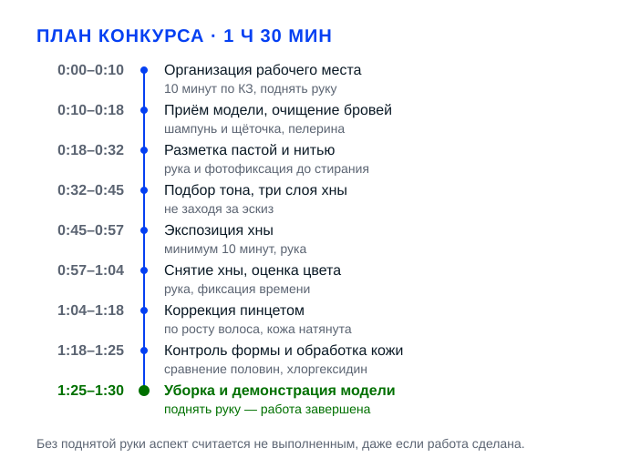
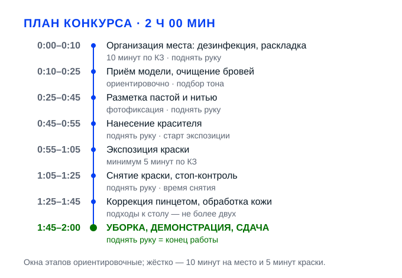
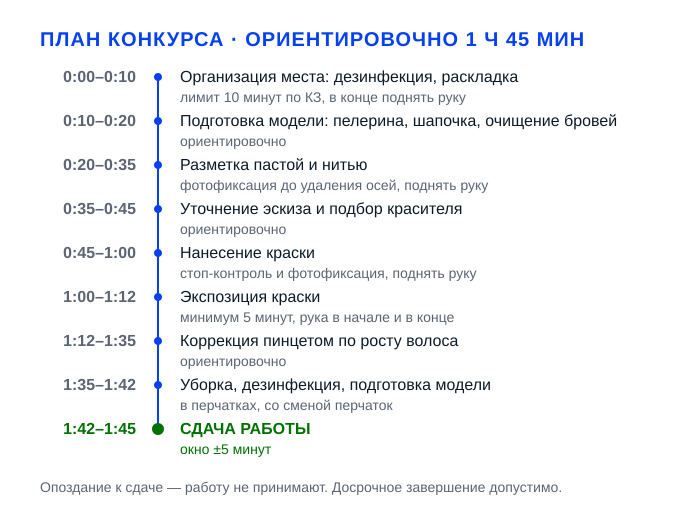

Бровист (Р,О)
Задания ниже — официальные файлы «Абилимпикс» (источник: abilympics-russia.ru), разложенные по категориям. Решения написаны по тексту задания, регламенту и критериям оценки; в них указано, что именно проверяет эксперт.
Школьник
14–16 лет, базовый уровень заданияВыдержка из официального конкурсного задания: страницы, относящиеся к категории «Школьник» (стр. 5–7 источника).
Пошаговое решение
Одно задание, один модуль и полтора часа на всё: окрасить брови хной и скорректировать форму пинцетом. Звучит коротко, но внутри — десять минут на организацию места, разметка пастой и нитью, три плотных слоя красителя, экспозиция не меньше десяти минут и коррекция, где каждое движение пинцетом идёт по росту волоса. Баллы здесь набираются не в конце, а по ходу: эксперты фиксируют поднятую руку после организации места, после последнего слоя хны и после снятия, а разметку фотографируют до того, как вы сотрёте вспомогательные линии. Поэтому решение построено в том же порядке, в котором идёт процедура, — от внешнего вида и дезинфекции до финальной уборки и демонстрации модели. Читайте его как маршрут: каждый шаг отвечает на вопрос, что делать руками и что в этот момент видит эксперт.

Задача 1. Подготовить себя, модель и рабочее местоМодуль А · организация места 10 минут
Первый блок решает, останется ли у вас время на саму процедуру. Десять минут на организацию — это отдельный тайминг задания, и он закрывается поднятой рукой, а не молчаливой готовностью. Внутри блока четыре вещи: собственный внешний вид по дресс-коду, обработанные руки и перчатки, продезинфицированный и накрытый стол с разложенными по зонам инструментами, принятая модель с вымытыми бровями. Здесь ещё не пахнет красителем, но именно тут снимаются баллы за санитарию и подготовку, которые потом невозможно набрать обратно.
Действие 1.1. Привести себя в соответствие с дресс-кодом
Шаг 1.1.1
Надеваем комплект по дресс-коду: однотонные чёрные брюки классического кроя, длина которых в положении стоя доходит до середины пятки, и чёрную блузку или рубашку без крупных деталей. Под брюки — чёрные колготки или носки, на ноги — закрытые туфли или балетки без шнурков с каблуком не выше пяти сантиметров. Аксессуары, броши, ремни с крупной пряжкой и пирсинг снимаем: в задании они запрещены, разрешены только серьги-гвоздики, не больше одной пары.
Внешний вид эксперт фиксирует до старта, и любое отклонение читается как неготовность работать с клиентом. Однотонность и закрытая обувь здесь не формальность: бровисту приходится стоять над моделью по двадцать минут подряд, и обувь без шнурков не развяжется в самый неподходящий момент. Строгий чёрный цвет нужен ещё и потому, что на нём не видно случайных пятен красителя, — к концу работы вы не будете выглядеть неаккуратно.
Проверьте себя в зеркале в полный рост и попросите волонтёра посмотреть со спины: брюки не собираются гармошкой на обуви, блузка заправлена, на одежде нет светлых пятен и торчащих ниток. Наклонитесь и присядьте — ткань не должна тянуть или открывать поясницу. Каблук при сомнении измерьте линейкой: пять сантиметров — это граница, а не ориентир.
Самая частая ошибка — прийти в удобных кроссовках или брюках со множеством карманов и молний, рассчитывая, что «это же чёрное». Спортивный крой и шнурки видны сразу, и балл за внешний вид теряется ещё до того, как вы взяли кисть. Вторая ошибка — оставить кольцо или браслет: украшение мешает мыть руки и цепляется за пелерину.
Эксперт осматривает участника до старта, стоя в полутора метрах, и оценивает силуэт целиком: длину брюк, обувь, отсутствие аксессуаров. К этому пункту он возвращается, если видит, что одежда испачкалась красителем по ходу работы.
Шаг 1.1.2
Собираем волосы в гладкий пучок или косу так, чтобы ни одна прядь не падала на лицо и плечи: закалываем невидимками и проходим по линии роста волос гелем. Шапочку и фиксатор-повязку надевать нельзя, поэтому причёска держится только на шпильках и резинке. Ногти стрижём коротко — свободный край не больше двух миллиметров, — покрытие допускается только светлое пастельное. Разрешён и дневной макияж, но без ярких акцентов.
Выбившаяся прядь — это не только некрасиво: она касается лица модели, а по санитарным нормам после каждого такого касания нужно обрабатывать руки антисептиком. Короткие ногти нужны потому, что вы работаете у кожи вокруг глаз: длинный край цепляет веко и оставляет следы на разметке. Жвачка и конфеты запрещены прямым пунктом задания, и за них снимают балл за этику без обсуждения.
Наклоните голову вниз и в стороны — волосы не должны выпадать из причёски. Посмотрите на ногти под лампой: свободный край не выступает за подушечку пальца, лак без сколов. Перед входом в зону проверьте, что во рту ничего нет.
Ошибка — собрать волосы «примерно» и рассчитывать, что за полтора часа ничего не выбьется: к середине экспозиции прядь уже лежит на щеке модели. Вторая — оставить длинный ноготь на одном пальце, «он мне нужен для работы»: именно им вы продавите кожу при натяжении.
Эксперт смотрит на причёску и руки при знакомстве с моделью и ещё раз в процессе, когда вы наклоняетесь над бровями. Отдельно фиксируется, поправляли ли вы волосы рукой в перчатке.
Шаг 1.1.3
Обрабатываем руки антисептиком до запястий и даём высохнуть, не вытирая: спирт должен испариться сам. Надеваем перчатки по размеру, расправляя каждый палец, чтобы на подушечках не оставалось складок. Меняем перчатки после дезинфекции поверхностей и каждый раз, когда коснулись телефона, своей одежды, волос или ручки кольцевой лампы. Перчатки снимаем за резинку, не растягивая манжету.
Требование про антисептик в задании сформулировано жёстко: руки обрабатываются в начале работы и после каждого касания предметов, поверхностей и вещей клиента. Это не абстрактная санитария — краситель и хлоргексидин переносятся руками, а перчатка с микротрещиной превращается в мокрую салфетку, которая размазывает состав по коже. Чистые перчатки защищают и разметку: след от пальца стирает пасту, и линии приходится отбивать заново.
Перчатки сидят по руке, не свисают на кончиках и не жмут у основания пальцев, на них нет порезов и следов красителя. Если вы только что поправляли лампу или брали телефон, перчатки уже должны быть сняты и заменены, а не протёрты.
Типичная ошибка — работать в одной паре весь модуль, оправдывая это тем, что «перчатки мешают чувствовать волос». Скользкая старая перчатка хуже держит пинцет, а заляпанные красителем пальцы эксперт видит сразу. Вторая ошибка — снимать перчатки и надевать их обратно, вывернув наизнанку.
Эксперт смотрит на руки в четыре момента: на входе, перед разметкой, перед нанесением хны и перед коррекцией. Смена перчаток после дезинфекции стола — отдельный аспект, который проверяют по факту.
Действие 1.2. Организовать рабочее место за десять минут
Шаг 1.2.1
Надеваем перчатки и обрабатываем стол, стул и кольцевую лампу дезинфицирующим раствором из распылителя: проходим столешницу от дальнего края к себе, отдельно подлокотники и спинку стула, отдельно ручки и основание лампы. Даём раствору отработать столько времени, сколько указано в инструкции к средству, не вытирая сразу насухо. Затем накрываем стол одноразовой пелёнкой, а стул — одноразовой накидкой.
Дезинфекция до накрытия — единственный правильный порядок: если сначала постелить пелёнку, а потом распылить раствор, он попадёт на ткань и не обработает поверхность. В задании отдельно указано, что дезинфекция проводится только в перчатках и что после неё перчатки обязательно меняются, то есть это два разных действия. Кольцевая лампа входит в список поверхностей, потому что к ней прикасаются руками и она стоит в двадцати сантиметрах от лица.
Стол влажный от раствора всё время экспозиции, пелёнка лежит ровно и не свисает с края. Стул накрыт целиком, подлокотники закрыты, пятен и разводов на ткани нет. После накрытия поверхности не касаются голыми руками.
Ошибка — протереть стол одной салфеткой и сразу накрыть: раствор не успевает отработать, и дезинфекция считается формальной. Вторая — накрыть стол, а лампу оставить нетронутой, хотя её ручки вы будете крутить десять раз за процедуру.
Эксперт наблюдает за дезинфекцией с первых минут и отмечает порядок действий: раствор, экспозиция, накрытие, смена перчаток. Если пелёнка легла на непродезинфицированный стол, аспект считается не выполненным.
Шаг 1.2.2
Раскладываем всё по трём зонам: справа — чистое (крафт-пакет с пинцетом, кисти, нить, паста, хна), в центре — то, что используется прямо сейчас, слева — контейнер для грязного и пакет для мусора. Пинцет оставляем в запечатанном крафт-пакете и вскрываем только при модели. Флаконы ставим так, чтобы крышка открывалась одной рукой, а не откручивалась на весу.
Разделение на чистое и грязное прописано в задании отдельным требованием и проверяется глазами: если использованная салфетка лежит рядом с чистыми кистями, зона считается смешанной. Крафт-пакет нужен ещё и как доказательство — на нём есть индикатор, по которому эксперт определяет, что пинцет прошёл обработку. Порядок экономит минуты: на поиск нити или колпачка уходит время экспозиции.
Пройдите взглядом по столу слева направо: грязная зона не соприкасается с чистой, крышки закрыты, на пелёнке нет россыпи ватных дисков. Пинцет в пакете, индикатор читается, пакет не вскрыт заранее. Всё нужное достаётся одной рукой, не переставляя флаконы.
Частая ошибка — выложить всё красивым рядом, смешав чистое и использованное. Вторая — вскрыть крафт-пакет заранее, до приглашения модели: к моменту коррекции пинцет уже лежит на пелёнке, и доказать его обработку нечем.
Эксперт подходит к столу после команды «старт» и оценивает зонирование и целостность крафт-пакета. Позже он смотрит, остаётся ли порядок: не появились ли грязные салфетки в чистой зоне.
Шаг 1.2.3
Ставим модель так, чтобы её лицо было на уровне вашего локтя: при работе стоя вы не должны сгибаться в пояснице и заглядывать снизу. Кольцевую лампу разворачиваем на сорок пять градусов сбоку и чуть сверху, чтобы свет ложился на бровь и не бил модели в глаза. Надеваем пелерину на плечи, волосы модели убираем под шапочку, проверяя, что ни одна прядь не лежит на лбу.
Свет сбоку проявляет каждый волосок и делает видимой границу разметки, а свет в лицо заставляет модель щуриться и моргать, и вы теряете контроль над кожей вокруг глаза. Правильная высота посадки — это точность движений: когда рука висит на весу, пинцет дрожит, а линия выходит рваной. Пелерина и шапочка защищают одежду и волосы модели от красителя, и их наличие проверяют до начала работы.
Сядьте на место бровиста и посмотрите на модель: бровь в центре светового пятна, тени нет, вам удобно и спина прямая. Волосы полностью убраны под шапочку, на лбу и висках нет прядей. Пелерина застёгнута у шеи и закрывает плечи до локтя.
Ошибка — поставить лампу прямо в лицо и работать «в лоб»: блик съедает границу разметки, а модель жмурится и тянет кожу лба. Вторая — надеть пелерину, но оставить чёлку: несколько волосков попадут под хну и окрасятся вместе с бровью.
Эксперт проверяет положение лампы и наличие пелерины с шапочкой в момент подготовки. Неудобная посадка модели видна и позже — по тому, как вы тянетесь к дальней брови.
Шаг 1.2.4
Заканчиваем организацию строго в отведённые десять минут: последний взгляд по столу, проверка пакета с пинцетом, поправленная пелерина — и поднимаем руку вверх, не отходя от стола. Держим руку поднятой, пока эксперт не подойдёт и не зафиксирует, что рабочее место готово. До этого момента к процедуре не приступаем. Стоим у своего стола, а не у демонстрационного: отходить от модели нельзя.
Десять минут на организацию — отдельный тайминг задания, и поднятая рука здесь является условием зачёта: без неё аспект считается не выполненным, даже если стол идеален. Это же правило дальше действует по всей процедуре — рука фиксирует время разметки, начало экспозиции и её окончание. Привычка поднимать руку, а не надеяться, что эксперт заметит, сохраняет баллы, которые невозможно вернуть.
Рука поднята выше головы, вы стоите у своего стола, а не идёте к демонстрационному. На столе всё разложено по зонам, пелёнка на месте, модель в пелерине и шапочке. На часах не больше десяти минут от команды «старт».
Самая дорогая ошибка модуля — начать работу молча и «догнать» организацию позже: балл за тайминг уходит, а эксперт всё равно подойдёт и попросит остановиться. Вторая — поднять руку и тут же опустить, не дождавшись эксперта, и заняться моделью.
Эксперт фиксирует время и осматривает стол именно по поднятой руке. Если рука не поднята в течение десяти минут, аспект закрывается как невыполненный.
Действие 1.3. Принять модель и подготовить брови к работе
Шаг 1.3.1
Сажаем модель, поворачиваем лицо к свету и осматриваем зону бровей: кожа должна быть чистой, без сыпи, шелушения, свежих ссадин и следов загара. Спрашиваем и проверяем, нет ли перманентного макияжа бровей, татуировок и пирсинга в зоне лица. Заодно смотрим на одежду: белая рубашка или блузка с рукавом не меньше трёх четвертей, без высокого горла, чёрные брюки или юбка не выше колен, чёрные колготки и закрытая обувь. Просим снять крупные серьги и украшения; если модель не может их снять, сразу говорим об этом экспертам.
Требования к модели перечислены в задании прямо: отсутствие дерматологических заболеваний, перманентного макияжа, татуировок и пирсинга в зоне лица. Краситель на повреждённой коже — это риск раздражения и пятен, которые невозможно исправить за оставшееся время. Украшение, о котором вы не сообщили, эксперт заметит на фотофиксации, и вопрос будет уже к вашей внимательности, а не к модели.
Кожа под лампой ровная, без покраснений и микроповреждений, брови не татуированы и не подкрашены. Украшения сняты или лежат у модели, о несоответствии сообщено. Если есть сомнение по коже, покажите зону эксперту до нанесения пасты.
Ошибка — не посмотреть кожу и начать разметку: паста ложится в микротрещинку и остаётся там после снятия. Вторая — промолчать про крупные серьги, решив, что «они не мешают»: на фото разметки они попадут в кадр, и аспект по подготовке модели закроют с минусом.
Эксперт осматривает модель вместе с вами на старте и сверяет её вид с требованиями задания. Отдельно фиксируется, сообщили ли вы о несоответствии, если оно есть.
Шаг 1.3.2
Наносим на брови немного шампуня для бровей, вспениваем щёточкой круговыми движениями против роста волоса и смываем влажным ватным диском по росту. Промокаем насухо и проходим обезжиривающим лосьоном, чтобы снять остатки кожного жира и косметики. Пока кожа сохнет, рассматриваем направление роста каждого участка — от головки к хвосту, вверх и в сторону.
Задание требует очистить брови шампунем и специальной щёточкой в начале процедуры, и это не ритуал: на жирной коже паста разметки расплывается, а хна ложится пятнами. Чистый волос приоткрывает кутикулу и берёт пигмент ровнее, поэтому цвет потом выглядит плотным по всей длине. Заодно вы получаете карту роста — по ней потом пойдёт пинцет.
Ватный диск после снятия шампуня светлый, без серого налёта, кожа матовая и сухая. Брови лежат распушёнными, каждый волосок читается под лампой. Вы можете показать пальцем, в какую сторону растут волоски в головке, теле и хвосте.
Частая ошибка — протереть брови мицелляркой для скорости: жир остаётся, паста растекается, и линии разметки выходят толщиной в карандаш. Вторая — тереть кожу против роста слишком сильно, оставляя покраснение, которое потом видно на фото.
Эксперт смотрит, чем и как вы очищаете брови, и оценивает, осталась ли кожа сухой перед разметкой. По фотофиксации видно, легла ли паста ровно, а по первому слою — не осталось ли на коже налёта от шампуня.
Задача 2. Выполнить разметку бровей пастой и нитьюМодуль А · разметка и фотофиксация
Разметка — это фундамент, на котором держится и окрашивание, и коррекция. По заданию она выполняется пастой и нитью, по схеме конкурсного задания, а эксперты фотографируют её до того, как вы удалите вспомогательные линии. Ошибка в полтора миллиметра здесь не остаётся ошибкой разметки: она превращается в кривую границу хны и в асимметричную форму, которую уже не исправить без потери цвета. Поэтому сначала находятся три опорные точки, потом отбиваются оси, потом проверяется симметрия — и только после этого поднимается рука под камеру.
Действие 2.1. Найти три опорные точки и отбить оси
Шаг 2.1.1
Находим начало брови: прикладываем нить или тонкую линейку вертикально через крыло носа так, чтобы она прошла через внутренний угол глаза, и ставим пастой точку на коже, чуть выше линии волос. Повторяем замер на второй стороне и добиваемся одинакового расстояния от центра лица. Точку ставим тонкой кистью, не задевая волоски: на волосе паста размажется и разметка поплывёт.
Начало брови задаёт всё построение: сдвинете его к переносице — брови сойдутся и лицо будет выглядеть хмурым, уведёте наружу — появится пустое место у носа. В задании разметка оценивается по схеме, и первая опорная точка должна стоять там, где требует схема, а не там, где удобно кисти. Симметрия начинается именно с этого замера, а не с последующей правки.
Расстояние от середины переносицы до правой и левой точек одинаковое — проверьте нитью, сложенной пополам. Точка стоит на коже, а не на волоске, и хорошо видна под лампой. При взгляде модели прямо зрачки находятся на одной линии с точками.
Ошибка — отмерить начало на глаз с одной стороны и перенести точку на вторую без замера: асимметрия в два миллиметра уже читается на фото. Вторая — поставить точку слишком высоко на лбу, где нет волос, и потом вести границу по пустой коже.
Эксперт подходит к модели после разметки и сравнивает обе половины по фото. Смещённое начало видно сразу, даже без линейки, а по снимку заметно, насколько точка совпадает со схемой.
Шаг 2.1.2
Определяем излом: ведём линию от крыла носа через зрачок при взгляде модели прямо — там, где линия пересекает бровь, будет самая высокая точка. Отмечаем её пастой и проверяем, что она не смещена к хвосту: излом ближе к внешнему краю делает лицо удивлённым. Симметрично переносим точку на вторую бровь и сверяем высоту от линии зрачков, а не от брови, иначе разница в посадке глаз даст перекос.
Излом — самая заметная точка брови, и от его положения зависит выражение лица. Если поставить его слишком далеко к виску, бровь провисает и взгляд кажется усталым. В схеме разметки эта точка привязана к зрачку, поэтому отклонение от неё эксперт замечает первым.
Обе точки на одной высоте от линии глаз, расстояние от начала брови до излома примерно вдвое больше, чем от излома до конца. Модель смотрит прямо, зрачок совпадает с вашей нитью. Под лампой точки читаются одинаково ярко.
Типичная ошибка — ставить излом там, где у модели привычная бровь, а не по схеме: старая форма тянет руку. Вторая — ставить точку, когда модель смотрит в сторону, и получать смещение на два-три миллиметра.
Эксперт сверяет положение излома со схемой и с фото второй брови. Разная высота изломов — самый частый минус на этом аспекте, и он виден даже при беглом взгляде.
Шаг 2.1.3
Ставим точку конца брови: нить от крыла носа через внешний угол глаза, на пересечении с линией брови. Следим, чтобы хвост не опускался ниже начала — при взгляде прямо конец должен быть на уровне начала или чуть выше. Сверяем длину хвоста по второй брови и только потом соединяем точки линиями. Если модель смотрит в сторону, точку не ставим: зрачок уходит, и конец брови съезжает.
Конец задаёт длину брови, а длина — пропорцию лица. Слишком короткий хвост делает лицо шире, слишком длинный опускает взгляд вниз. В задании форма оценивается как сбалансированная, и баланс этот держится на трёх точках, третья из которых — конец. Это и есть база формы, с которой потом сверяют всё остальное.
Обе точки конца на одном расстоянии от центра лица, хвост не ниже головки. Длину хвоста на двух бровях проверяйте нитью: она должна совпадать с точностью до миллиметра, а не на глаз. Смотрите по фото в анфас, а не вполоборота, иначе разница в посадке глаз скроет перекос.
Ошибка — вести конец по старой линии, которая уже была выщипана, и получить разную длину слева и справа. Вторая — опустить хвост вниз, чтобы «смотрелось мягче»: на фото это читается как грустное выражение.
Эксперт сравнивает длину хвостов на фотофиксации. Разница в длине видна даже при идеально ровной линии. Отдельно он отмечает, не опущен ли хвост ниже головки.
Шаг 2.1.4
Натягиваем нить между точками и отбиваем линии: наносим на нить немного пасты, прикладываем к коже, натягиваем и отпускаем так, чтобы нить щёлкнула и оставила ровный след. Сначала отбиваем верхнюю границу от начала к излому и от излома к концу, затем нижнюю. Толщину задаём расстоянием между линиями: у головки шире, у хвоста тоньше. Пасту на нить наносим тонко, иначе линия выйдет жирной.
Нить даёт прямую линию, которую невозможно провести от руки: кисть всегда дрогнет, а щелчок ложится точно по двум точкам. Именно поэтому в задании разметка выполняется пастой и нитью, а не карандашом. Ровная вспомогательная линия — ориентир для хны: краситель наносится, не заходя за границы эскиза.
Линия тонкая, непрерывная, без разрывов и двойного следа от повторного щелчка. Верхняя и нижняя границы параллельны там, где это нужно, и расходятся к головке. Паста не растеклась по коже и не попала на волоски за пределами контура.
Ошибка — отбивать нитью по влажной коже: паста расплывается, линия выходит шириной в два миллиметра, и нанести хну точно по такой границе невозможно. Вторая — щёлкать дважды по одному месту, получая двойную линию и сбивая глаз.
Эксперт смотрит на разметку до стирания и на фото: оценивается чёткость линии и совпадение с эскизом. Размытая граница считается слабой разметкой. Смотрит он и на толщину следа, оставленного нитью.
Действие 2.2. Замкнуть эскиз, проверить симметрию и поднять руку
Шаг 2.2.1
Соединяем точки в замкнутый контур тонкой кистью: ведём от начала к излому по верхней линии, от излома к концу, затем возвращаемся по нижней. Внутри контура слегка припыляем кожу пастой, чтобы форма читалась целиком. Волоски, выходящие за контур, обводим отдельно, но не закрашиваем. Кисть держим почти вертикально и ведём короткими штрихами, чтобы паста не легла бугром на волоски.
Эскиз — это карта работы: по нему вы наносите хну, по нему же корректируете форму пинцетом. Если контур не замкнут, граница красителя поплывёт, и работа будет выглядеть неаккуратной. Задание требует, чтобы хна не заходила за границы эскиза, а значит, эскиз должен быть виден всё время процедуры.
Контур замкнут, внутри он светлее границ, форма читается с расстояния вытянутой руки. Волоски вне контура видны и не закрашены. Эскиз одинаково хорошо виден на обеих бровях. Внутри контура паста лежит тонким слоем, без комков.
Ошибка — закрасить пастой всю бровь и потерять границу: потом непонятно, где заканчивается эскиз и начинается кожа. Вторая — вести контур по волоскам, а не по коже, и получить рваную линию. Третья — смазать эскиз мокрым диском.
Эксперт оценивает эскиз целиком: замкнутость, читаемость, соответствие схеме. По нему же он потом проверяет, не вышла ли хна за границы, поэтому эскиз должен читаться и на фото крупным планом.
Шаг 2.2.2
Отходим на полтора-два метра или смотрим на модель через камеру телефона и сравниваем половины: высоту изломов, длину хвостов, толщину в головке. Проверяем расстояние между брёвями — оно должно быть примерно равно ширине двух пальцев, приложенных к переносице. Если нашли расхождение, стираем только проблемный участок влажным диском и отбиваем заново.
На расстоянии вытянутой руки глаз видит пропорции, а вблизи — только волоски. Симметрия бровей — отдельный аспект оценки, и проверяется она именно по фото в анфас. Исправлять лучше сейчас, пока линии не закреплены работой: после хны любая правка будет стоить цвета.
На фото в анфас обе брови занимают одинаковое место на лице, изломы на одной высоте, хвосты заканчиваются на одной линии. Расстояние между брёвями не больше ширины двух пальцев. Ни одна бровь не выглядит толще другой.
Ошибка — проверять симметрию, наклонившись к лицу: в таком ракурсе разница не видна. Вторая — подправлять одну бровь под другую без повторного отбивания нитью, из-за чего линии расходятся ещё сильнее.
Фотофиксация делается до стирания линий, и эксперт сравнивает половины именно по ней. Небольшая асимметрия в разметке почти всегда превращается в асимметрию готовой работы.
Шаг 2.2.3
После проверки симметрии поднимаем руку выше головы, чтобы её было видно через бокс, и ждём эксперта: фотофиксация разметки делается до удаления вспомогательных линий и осей. Пока эксперт снимает, руки держим в стороне от лица модели, не поправляем пасту и не вытираем лишнюю линию. Только после того как эксперт опустил камеру, можно продолжать процедуру.
Порядок зашит в задание: сначала фото, потом работа, и если вы сотрёте линии до снимка, доказать разметку будет нечем. Отсутствие поднятой руки означает, что аспект считается не выполненным, даже если разметка была идеальной. Это самая обидная потеря баллов, потому что работа уже сделана.
Рука поднята, эксперт подошёл, кадр сделан до того, как вы коснулись лица модели. Паста на бровях цела, вспомогательные оси на месте, обе брови попали в кадр целиком. Хну вы не начали наносить до команды.
Ошибка — стереть оси сразу после проверки, чтобы не мешали: фотофиксация не состоится, и аспект закроется как невыполненный. Вторая — поднять руку и, не дождавшись, начать наносить краситель. Третья — стереть одну ось и оставить вторую.
Эксперт подходит по поднятой руке и фотографирует разметку целиком, включая оси. Если линий на фото нет, аспект не засчитывается. Фото хранится до конца конкурса и служит доказательством разметки.
Задача 3. Окрасить брови хной и выдержать экспозициюМодуль А · окрашивание и тайминг
Краситель в этом модуле — хна, и по заданию она наносится ровным и плотным слоем три раза, не заходя за границы эскиза, а экспозиция выдерживается не меньше десяти минут. Здесь два независимых умения: подобрать тон, который не спорит с внешностью модели, и положить состав так, чтобы не осталось просветов. И одно организационное: поднять руку после последнего слоя и ещё раз после снятия, потому что без этих двух отметок аспект тайминга закрывается как невыполненный при любом результате. В шапке модуля краситель назван тинтом, но аспекты оценки говорят о хне — дальше о ней.
Действие 3.1. Подобрать тон и подготовить состав
Шаг 3.1.1
Оцениваем модель при дневном или нейтральном свете: цвет волос у корней, оттенок кожи, цвет глаз. Подбираем тон хны так, чтобы бровь читалась как продолжение корней, а не как отдельный рисунок, и не уходила в чёрный на светлых волосах. Мазок выбранного состава делаем на салфетке и на тыльной стороне запястья, чтобы увидеть его на коже, а не на упаковке.
Цвет — отдельный аспект: он должен гармонировать с внешностью модели, а не просто быть коричневым. Слишком тёмный тон на светлых волосах даёт эффект графики, слишком светлый на тёмных пропадает и выглядит как пыль. Гармония тона оценивается вместе с интенсивностью, поэтому выбор на глаз по картинке здесь не работает.
Мазок на салфетке совпадает с цветом корней волос модели или темнее их на полтора-два тона, но не больше. На коже запястья он выглядит естественно, без рыжего или сизого отлива. Под лампой цвет не меняется так сильно, чтобы бровь стала другого оттенка.
Ошибка — взять самый тёмный тон, чтобы «лучше взялось»: на модели со светлыми волосами это выглядит как татуировка. Вторая — выбирать цвет по фотографии на телефоне, где баланс белого врёт и любой коричневый кажется тёплым.
Эксперт смотрит на выбранную упаковку и на результат: тон должен сочетаться с волосами и кожей. Оценивается и интенсивность — есть ли ощущение, что брови стали гуще, а не темнее.
Шаг 3.1.2
Разводим хну в стеклянной или пластиковой мисочке до консистенции густой сметаны: состав должен держать форму на кисти и не стекать, но ложиться без комков. Размешиваем от стенок к центру, разбивая сухие комочки тыльной стороной кисти, и даём постоять пару минут. Рядом кладём влажные ватные диски, сухие салфетки и ставим таймер. Мисочку ставим на пелёнку, а не на голый стол.
Слишком жидкая хна течёт по коже и выходит за эскиз, слишком густая ложится неровно и не даёт плотного слоя, а по заданию слой должен быть ровным и плотным. Комочек под кистью — это проплешина в цвете, которую потом видно на фото. Салфетки и таймер нужны рядом потому, что отходить от модели во время экспозиции нельзя.
Проведите кистью по внутренней стенке мисочки: след держится и не сползает вниз. В массе нет сухих крупинок, цвет однородный, комков под кистью не чувствуется. Кисть набирает состав и не капает при переносе к брови.
Ошибка — развести хну до состояния йогурта и получить потёки по всему лбу. Вторая — мешать в металлической посуде, где состав может окисляться и менять оттенок. Третья — развести состав заранее, и он подсохнет в мисочке.
Эксперт видит, как вы готовите состав, и оценивает его густоту по первому слою. Потёки за границей эскиза сразу читаются как ошибка консистенции. Смотрит он и на чистоту мисочки.
Шаг 3.1.3
Проходим по контуру брови тонким слоем жирного крема или вазелина, не заходя внутрь эскиза: это барьер, который не даст хне окрасить кожу за границей. Кожу внутри эскиза, наоборот, обезжириваем ещё раз сухим диском. Волоски расчёсываем щёточкой по росту и укладываем так, чтобы они не выходили за контур. Крем наносим ватной палочкой, а не пальцем: так граница получается тоньше.
Краситель на коже за контуром держится сутки и портит всю работу: аккуратной такую бровь не назовут. Барьер из крема решает проблему за минуту, но только если нанесён до состава. Обезжиривание внутри эскиза нужно, чтобы хна взялась равномерно по всей площади.
Контур брови окружён тонкой блестящей полоской, внутри эскиза кожа сухая и матовая. Волоски лежат по росту, ни один не торчит в сторону. Крем не попал внутрь контура: если попал, хна там не возьмётся и останется светлое пятно.
Ошибка — нанести крем на всю бровь вместе с кожей под волосками: краситель ляжет пятнами и смоется через несколько дней. Вторая — пренебречь барьером и потом оттирать тёмные разводы вокруг брови, стирая заодно разметку.
Эксперт смотрит на границу эскиза после снятия хны: чистый контур без ореола — признак правильной подготовки. Кожу вокруг брови он осматривает в тот же момент, пока состав ещё не смыт полностью.
Действие 3.2. Нанести три слоя хны
Шаг 3.2.1
Набираем хну на кисть и ведём первый слой от головки к хвосту, повторяя направление роста волоса: кисть идёт под углом к коже, волосок прокрашивается у корня. Слой делаем тонким, но сплошным, без пропусков, строго внутри эскиза. Состав берём немного, чтобы он не стекал с кисти, и распределяем без нажима: под давлением волоски прилипают к коже и краситель ложится пятнами.
Первый слой задаёт направление, по которому лягут остальные: если провести против роста, волоски встанут и второй слой ляжет комками. Прокрашивание у корня даёт ту визуальную густоту, за которую ставится оценка. Головка всегда тоньше, потому что волос там мягче и краситель берётся быстрее.
Под лампой не видно непрокрашенных волосков, кожа между ними закрыта составом. Граница слоя совпадает с линией эскиза, за контур ничего не вышло. Волоски лежат по росту и не топорщатся. Слой блестит, но не течёт.
Ошибка — наносить хну широкими мазками, не прокрашивая корни: цвет получится поверхностным и смоется за неделю. Вторая — начать с хвоста и размазать состав к головке, где его всегда оказывается слишком много.
Эксперт смотрит на первый слой с расстояния: важна ровность и то, что состав не вышел за эскиз. По первому слою видно, владеете ли вы кистью. Смотрит он и на границу у хвоста.
Шаг 3.2.2
Не снимая первый слой, набираем состав снова и проходим бровь вторым слоем в том же направлении, уплотняя середину тела брови. Кисть держим почти вертикально, чтобы не размазывать предыдущий слой, а вбивать новый в волос. Головку проходим легче, хвост — с небольшим нажимом. Между слоями кисть не мочим: вода разжижает состав, и он сползает с волоса на кожу.
Три слоя нужны не для толщины, а для плотности пигмента: каждый следующий закрывает просветы, оставшиеся после предыдущего. Второй слой основной, он отвечает за насыщенность цвета. Разная плотность по длине брови повторяет её природную густоту, и работа выглядит естественно.
Поверхность брови стала заметно плотнее и темнее, но бугорков и комков нет. Просветы между волосками закрыты, граница по-прежнему ровная. Слой не сползает и не оплывает, даже если модель слегка нахмурится.
Ошибка — набирать слишком много состава и лепить второй слой поверх первого: получаются бугры, которые потом отслаиваются кусками. Вторая — растягивать слой до самого края эскиза и выходить за него. Третья — снимать лишнее с брови сухой салфеткой.
Эксперт оценивает плотность и равномерность: к третьему слою бровь должна выглядеть однородной, без светлых пятен. Он проверяет и то, не вышел ли состав за эскиз.
Шаг 3.2.3
Третьим слоем закрываем оставшиеся просветы: проходим по всей брови короткими мазками, отдельно прокрашивая места, где сквозь состав проглядывает кожа. Хвост и верхнюю линию проходим аккуратно, чтобы не смазать эскиз. В конце один раз проходим кистью с чистой стороны по границе, не добавляя состава, и не возвращаемся по одному месту дважды: лишнее движение смазывает линию.
По заданию хна наносится три раза ровным и плотным слоем, и именно третий слой даёт ту плотность, по которой оценивают равномерность окрашивания. Недокрашенная бровь выглядит так, будто краситель подобран неверно, хотя дело в технике. Выравнивание границы в конце делает работу аккуратной.
Бровь целиком закрыта составом одинаковой плотности, кожа не проглядывает ни в головке, ни в хвосте. Граница ровная и совпадает с эскизом, за контуром чисто. Толщина слоя примерно одинаковая по всей длине, без наплывов.
Ошибка — решить, что двух слоёв достаточно: третий слой прописан в задании отдельно, и его отсутствие видно по цвету. Вторая — наложить третий слой бугром на головку, отчего именно там хна начнёт отслаиваться.
Эксперт проверяет равномерность после снятия: пятна и светлые участки говорят о том, что слоёв было мало или они легли неровно. Сверяет он и фото до и после, чтобы увидеть, где состав лёг тоньше.
Действие 3.3. Выдержать экспозицию и снять состав
Шаг 3.3.1
Сразу после третьего слоя поднимаем руку и держим её, пока эксперт не кивнёт или не запишет время: с этого момента идёт экспозиция. Пока рука поднята, не поправляем состав и не трогаем лицо модели. Время записываем или ставим таймер на десять минут и держим его на виду, а не в кармане, чтобы не отсчитывать в уме. В эти секунды модель сидит неподвижно, и вы стоите рядом, а не отходите к столу.
Задание требует, чтобы участник поднял руку после нанесения последнего слоя: без этого аспект тайминга считается невыполненным. Фиксация нужна и вам: экспозиция меньше десяти минут даёт слабый цвет, а передержка сушит кожу. Таймер освобождает голову для работы.
Рука поднята, эксперт подошёл и записал время, таймер запущен. На бровях лежат все три слоя, состав не потёк. Коррекцию вы не начали до фиксации времени. Таймер выставлен ровно на десять минут, а не на восемь.
Ошибка — нанести третий слой и сразу взяться за пинцет, решив, что время зафиксируете потом: старт экспозиции потерян, аспект не засчитан. Вторая — держать хну, пока не станет темнее, теряя контроль над временем.
Эксперт фиксирует время по поднятой руке и сверяет его со временем снятия. Разница меньше десяти минут — нарушение экспозиции. Он же следит, чтобы вы не начали коррекцию раньше времени.
Шаг 3.3.2
Держим состав минимум десять минут, отсчитывая по таймеру, а не на глаз. В это время стоим рядом с моделью, следим, чтобы она не хмурилась и не трогала лицо, и промокаем пот по краю лба сухой салфеткой, не задевая бровь. Допускается, что на головке брови слой начнёт подсыхать и уменьшаться. Салфетку держим у виска, а не над бровью, чтобы не смахнуть состав.
Минимальная экспозиция прописана прямо: хна должна быть выдержана не меньше десяти минут, и это аспект, который проверяется по часам. На головке волос тоньше, и состав там садится быстрее, поэтому задание отдельно разрешает уменьшение слоёв именно там. Всё остальное время вы отвечаете за то, чтобы модель не смазала работу.
Таймер показывает не меньше десяти минут, состав на брови остаётся влажным и тёмным, границы целы. На головке слой может истончиться, это нормально. Модель сидит спокойно, лицо не напряжено. Кожа под составом не стянута.
Ошибка — снять хну через семь минут, потому что уже потемнело: цвет получится поверхностным и быстро смоется. Вторая — оставить модель одну и вернуться через пятнадцать минут, когда состав уже высох коркой.
Эксперт сверяет время по часам и смотрит на состояние слоя. Сухая корка и потрескавшийся состав говорят о передержке. Отмечает он и то, не трогали ли вы работу руками.
Шаг 3.3.3
По окончании экспозиции поднимаем руку, чтобы зафиксировать время снятия, и только после этого снимаем состав. Работаем сухим ватным диском от хвоста к головке, по росту волоса, затем проходим влажным диском, смывая остатки, и промокаем насухо. Смотрим цвет при ровном свете, а не под жёлтой лампой. Диск меняем, как только он запачкался: размазанный пигмент втирается в кожу.
Второй подъём руки обязателен: без него не фиксируется окончание экспозиции, и аспект тайминга закрывается как невыполненный. Снимать состав нужно по росту, иначе волоски тянутся и бровь выглядит взъерошенной. Влажный диск убирает остатки, но не должен тереть кожу, иначе сотрётся и разметка, и цвет.
На диске не остаётся тёмных следов, кожа вокруг брови чистая, волоски лежат ровно. Цвет плотный по всей длине, без светлых проплешин и рыжих пятен. Вспомогательные линии разметки при этом ещё видны, если эксперт не попросил иначе.
Ошибка — снимать хну против роста и тянуть волос вместе с составом: получаются залысины и раздражение. Вторая — тереть кожу влажным диском так, что стирается паста разметки и проверить форму уже не по чему.
Эксперт подходит на второй подъём руки и оценивает цвет и равномерность сразу после снятия. В это время сравнивают интенсивность с цветом волос модели.
Задача 4. Скорректировать форму бровей пинцетомМодуль А · коррекция и форма
Коррекция — самый заметный блок для эксперта и самый опасный для модели: здесь проверяют, в каком направлении вы удаляете волос, держите ли кожу и не осталось ли лишних волосков. Работа идёт по эскизу, который вы уже сфотографировали: сначала межбровье и нижняя линия, потом верхняя и толстые волоски, потом сравнение половин. Пинцет к этому моменту должен быть вскрыт из крафт-пакета, а кожа обработана хлоргексидином до первого захвата.
Действие 4.1. Подготовить пинцет и кожу
Шаг 4.1.1
Перед коррекцией вскрываем крафт-пакет с пинцетом при модели и проверяем индикатор на пакете: он должен показать, что инструмент прошёл обработку. Достаём пинцет за ручки, не касаясь рабочих кончиков, и кладём на чистую салфетку в чистой зоне. Пустой пакет не выбрасываем до конца работы, по нему эксперт проверяет обработку. Ручки пинцета держим стерильной салфеткой, если берём их повторно.
В задании прямо сказано, что пинцет должен быть продезинфицирован и находиться в специальном крафт-пакете, а факт обработки определяется по индикатору. Вскрывать пакет заранее нельзя: инструмент на открытом столе считается грязным. Сохранённый пакет — ваше доказательство, если возникнет вопрос.
Индикатор на пакете изменил цвет так, как указано в инструкции к упаковке. Пинцет сухой, без разводов и ворсинок, кончики сомкнуты ровно. Пакет вскрыт по линии, а не разорван посередине, и лежит рядом на виду.
Ошибка — взять пинцет, который лежал на столе наготове: он уже не считается чистым, и аспект по гигиене не засчитывается. Вторая — выбросить пакет сразу, лишив себя доказательства обработки. Третья — уронить пинцет и поднять его с пелёнки.
Эксперт проверяет пакет и индикатор перед коррекцией. Пинцет без пакета — самый частый минус в этом блоке. Он смотрит и на то, лежит ли пакет на виду до конца коррекции.
Шаг 4.1.2
Обрабатываем зону бровей раствором хлоргексидина: наносим на ватный диск и проходим кожу вокруг брови и межбровье, не задевая глаза. Даём раствору высохнуть на воздухе, не вытирая. Меняем перчатки, если работали в них у открытых флаконов, и только потом берём пинцет. Диск ведём от межбровья к виску, меняя его на каждом участке, чтобы не переносить загрязнение обратно.
Задание требует обработать кожу хлоргексидином перед коррекцией и после неё, и это два отдельных действия. Антисептик снижает риск воспаления в устье волосяного фолликула, которое появляется именно после выщипывания. Влажная кожа хуже фиксируется, поэтому раствор должен высохнуть.
Кожа вокруг брови прохладная и сухая, покраснения нет, жидкость не затекла в глаз. Ватный диск использован один раз и отправлен в грязную зону. Перчатки чистые, без следов крема. Салфетка под инструментом сухая.
Ошибка — протереть кожу и сразу начать выщипывать: на влажной коже пинцет скользит. Вторая — задеть диском ресницы и слизистую, вызвав жжение, из-за которого модель будет моргать и мешать работе. Третья — лить раствор прямо на кожу.
Эксперт смотрит, обработана ли кожа до первого захвата пинцетом. Отсутствие антисептика до коррекции — отдельный минус, даже если после всё сделано правильно.
Шаг 4.1.3
Берём пинцет ближе к кончикам, как карандаш, и проверяем хват: большой и указательный пальцы держат ручки, средний страхует снизу. Свободной рукой пробуем натяжение: указательным и средним пальцами оттягиваем кожу над бровью вверх и чуть в сторону, противоположную росту волоса. Натяжение должно быть уверенным, но без побеления кожи. Пинцет держим под углом к коже, а не плашмя.
Аспект «кожа хорошо фиксируется» проверяется на протяжении всей коррекции: на подвижной коже волос рвётся, а не выходит с луковицей. Разрыв волоса — это бугорок и воспаление вместо чистой линии. Правильный хват пинцета даёт точность, которой не будет при захвате всей ладонью.
Кожа под пальцами натянута и не собирается в складку, модель не морщится от боли. Волос выходит целиком, с тёмной луковицей на конце. После движения на коже не остаётся вдавленного следа от ногтя и красной полосы.
Ошибка — тянуть волос, не придерживая кожу: она тянется за пинцетом, волос рвётся посередине, и на следующий день на этом месте будет бугорок. Вторая — давить пинцетом в кожу, оставляя синяки. Третья — тянуть кожу вниз, к самой брови.
Эксперт наблюдает за руками в процессе: видно, придерживают ли кожу и как расположен пинцет. Растянутая кожа и красные следы — признак грубой работы. Он смотрит и на посадку пинцета в руке.
Действие 4.2. Удалить лишние волоски по росту
Шаг 4.2.1
Удаляем каждый волос в направлении его роста: захватываем у корня и ведём пинцет по линии волоса, а не вверх и не поперёк. В головке волос растёт вверх и в сторону, в теле по диагонали, в хвосте почти горизонтально. Перед каждым захватом смотрим, куда лежит волос, а не действуем по памяти. Пинцет ведём коротким движением вдоль волоса, а не выдёргиваем его рывком вверх.
Задание требует удалять волоски только в направлении роста, и это не формальность: при движении против роста волос ломается у корня и врастает. Направление в разных частях брови неодинаковое, поэтому универсального движения снизу вверх не существует. Именно на этом аспекте чаще всего теряют баллы на категории «Школьники».
Волоски выходят с луковицей, а не обрывком. На коже после удаления нет тёмных точек — это признак обломанных волос. Модель не вздрагивает при каждом движении, потому что вы двигаетесь по линии наименьшего сопротивления.
Ошибка — выщипывать все волоски движением на себя: часть рвётся, часть врастает, и через неделю бровь покрывается точками. Вторая — не смотреть на направление в хвосте, где волос лежит почти плашмя. Третья — щипать по несколько волосков сразу.
Эксперт стоит рядом и смотрит на угол движения пинцета. Однотипные рывки в одном направлении на всей брови сразу читаются как ошибка. Он смотрит на кожу после каждого участка.
Шаг 4.2.2
Начинаем с межбровья: убираем волосы между брёвями, двигаясь от переносицы к началу брови, чтобы не осталось тёмной полоски у носа. Затем проходим зону под бровью, формируя нижнюю линию по эскизу. Двигаемся короткими участками по два-три волоска и после каждого проверяем линию с расстояния. Кожу над бровью придерживаем пальцами свободной руки, а не той, что держит пинцет.
Межбровье — первое, что бросается в глаза на фото, и несколько забытых волосков там читаются как небрежность. Нижняя линия брови задаёт её форму, поэтому её ведут по эскизу, а не по интуиции. Короткие участки нужны, чтобы не увлечься и не выщипать лишнее.
Между брёвями чисто, кожа ровная, без пеньков. Нижняя линия повторяет линию эскиза и не имеет ступенек. С расстояния вытянутой руки граница выглядит непрерывной. Верхняя граница межбровья ровная, без уступа у переносицы.
Ошибка — убрать межбровье примерно и оставить волоски у самого начала брови, где они тоньше и незаметнее вблизи. Вторая — срезать нижнюю линию слишком высоко, сделав бровь тонкой и удивлённой. Третья — выщипать волоски выше эскиза.
Эксперт осматривает межбровье и нижнюю линию на фото. Пеньки и ступеньки видны без увеличения. Он подходит к модели после каждого этапа и сравнивает линию с эскизом на фото.
Шаг 4.2.3
Проходим зону над бровью, удаляя только те волоски, которые выходят за верхнюю линию эскиза, и оставляя мягкий пушок внутри контура. Отдельно находим толстые тёмные волоски в теле брови и убираем их по одному, не трогая соседние. После каждого участка расчёсываем бровь щёточкой по росту, чтобы увидеть реальную картину. Пушок не трогаем: он держит объём и не виден на фото.
Сверху проходит линия, которую видно при разговоре и на фото в профиль, поэтому лишние волоски там особенно заметны. Толстые волоски в теле брови дают эффект кустиков, и их удаление входит в отдельный аспект оценки. Расчёсывание возвращает волоски на место и показывает, что осталось.
Верхняя линия ровная, без отдельных торчащих волосков, мягкий пушок внутри контура сохранён. Толстых тёмных волосков в теле брови не осталось. После расчёсывания форма читается целиком и не лохматится.
Ошибка — выщипать весь пушок над бровью, оставив резкую графичную границу: на лице это выглядит неестественно. Вторая — пропустить толстые волоски, потому что они приглажены и не видны, пока не расчесать.
Эксперт смотрит на бровь в профиль и после расчёсывания. Отдельные торчащие волоски сверху — прямой минус по аспекту «лишние волоски удалены», а сохранённый пушок внутри контура работает в плюс.
Шаг 4.2.4
Отдельно проходим головку и хвост: в головке убираем волоски, выходящие за начало эскиза, но сохраняем её ширину, а в хвосте работаем по одному волоску, потому что там их мало и каждый на виду. Хвост ведём к концу эскиза, не сужая его раньше времени, и делаем это при ярком боковом свете. После головки и хвоста ещё раз расчёсываем бровь и смотрим на неё в профиль.
Головка и хвост — края брови, по которым читается её длина, и ошибка здесь видна сильнее, чем в середине. Перещипанный хвост уже не восстановить: волосы там растут медленно и редко. Ширина головки влияет на то, выглядит ли бровь естественной. Отсюда и осторожность на краях.
Головка сохранила ширину, начало брови читается как мягкий прямоугольник, а не как точка. Хвост сужается постепенно и заканчивается на линии эскиза. В профиль бровь выглядит ровной, без провалов. Перехода от головки к хвосту не видно.
Ошибка — сузить хвост до линии в один волос: бровь обрывается, и лицо выглядит старше. Вторая — срезать головку с внутренней стороны, из-за чего брови расходятся и переносица кажется шире. Третья — оставить волосок прямо на линии.
Эксперт сравнивает головки и хвосты на фото до и после. Резкое сужение хвоста читается как потеря формы. Он смотрит на края брови отдельно от середины, потому что там ошибки заметнее.
Действие 4.3. Проверить форму и обработать кожу после
Шаг 4.3.1
Отходим на расстояние и сравниваем брови: толщину в головке, высоту излома, длину и направление хвоста. Смотрим на модель в анфас и вполоборота, затем проверяем по фото. Если нашли расхождение, убираем по одному волоску с той стороны, где линия шире, а не добавляем с другой. Сравниваем не только форму, но и то, насколько брови подходят лицу модели.
Форма бровей оценивается как сбалансированная, и асимметрия — самый заметный дефект готовой работы. Убирать лишнее всегда безопаснее, чем пытаться дорисовать: волос отрастёт не скоро, а цвет уже нанесён. Проверка в двух ракурсах нужна потому, что в анфас не видно разницы в глубине посадки бровей.
На фото в анфас обе брови занимают одинаковую высоту и имеют одинаковую толщину в трёх точках — начале, изломе и хвосте. В профиль хвосты заканчиваются на одной линии. Модель выглядит так, будто у неё всегда были такие брови.
Ошибка — поправлять форму, наклонившись к лицу: вблизи разница не читается, и правка идёт наугад. Вторая — срезать лишнее сразу с двух сторон, теряя толщину, вместо того чтобы выровнять одну. Третья — править форму после фотофиксации.
Эксперт оценивает общее впечатление по фото и вживую, сравнивая половины. Небольшая асимметрия допустима, явная снижает оценку до нижней границы шкалы.
Шаг 4.3.2
Проходим по контуру брови ватной палочкой, смоченной в хлоргексидине, убирая остатки пасты и крошки красителя по границе. Смотрим на линию против света: она должна быть непрерывной, без зубцов и ступенек. Отдельно проверяем, что ни один волосок не остался за контуром. Палочку держим под углом и меняем её на каждом участке, чтобы не размазать пигмент обратно по коже.
Паста разметки после снятия хны оставляет серые следы, и если их не убрать, работа выглядит грязной. Непрерывная линия — это то, что видят на фото крупным планом. Остатки пасты в межбровье эксперт замечает первым, потому что эта зона открыта. Это видно на любом фото крупным планом.
Под лампой на коже нет серых и розовых разводов, граница брови читается как чёткая линия по всей длине, включая хвост. Ватная палочка после прохода остаётся почти чистой. Волоски за контуром отсутствуют.
Ошибка — стирать пасту сухой ватной палочкой: она размазывает пигмент и оставляет серое пятно, которое потом не убрать без мыла. Вторая — тереть кожу, снимая вместе с пастой верхний слой эпидермиса. Третья — тереть кожу до покраснения.
Эксперт смотрит на кожу вокруг брови вблизи: разводы и остатки пасты видны сразу. Чистота контура влияет на оценку аккуратности. Он проверяет контур и в профиль, и в анфас.
Шаг 4.3.3
Обрабатываем зону после коррекции раствором хлоргексидина вторым чистым диском, промокая, а не растирая. Через минуту наносим тонкий слой успокаивающего средства, если оно предусмотрено набором, и предупреждаем модель не трогать брови руками в первые часы. Пинцет убираем в грязную зону, а не оставляем на салфетке. Диск берём новый, а не тот, которым обрабатывали кожу до коррекции.
Второе требование задания — обработать кожу хлоргексидином и после коррекции: открытые устья фолликулов остаются уязвимыми ещё несколько часов. Успокаивающее средство снимает покраснение, которое иначе видно на демонстрации. Убранный пинцет — часть разделения на чистое и грязное.
Кожа вокруг брови спокойного цвета, без покраснения, капель раствора и блеска лишнего крема. Модель подтверждает, что жжения нет. Пинцет лежит в грязной зоне, на столе не осталось рабочих инструментов.
Ошибка — пропустить обработку после коррекции, потому что кожа и так чистая: именно на этом аспекте теряют баллы те, кто торопится к уборке. Вторая — нанести крем толстым слоем, из-за чего бровь блестит на фото.
Эксперт проверяет обработку после коррекции и состояние кожи перед демонстрацией модели. Покраснение, блеск крема и капли раствора замечаются на общем плане, когда модель сидит перед ним.
Задача 5. Убрать рабочее место и показать модельМодуль А · уборка, демонстрация, этика
Финал стоит дороже, чем кажется: аспект уборки проверяется целиком, а модель демонстрируется уже без пелерины и шапочки. Плюс две шкалы, которые нельзя набрать техникой, — общее впечатление от окрашивания и коррекции от 0 до 3 и демонстрация профессиональной этики тоже от 0 до 3. Здесь важно не добавить к хорошей работе плохого последнего кадра: грязный стол, шапочка на модели или суетливая попытка поправить волосок после поднятой руки перекрывают то, что было сделано правильно.
Действие 5.1. Утилизировать расходники и сдать место
Шаг 5.1.1
Надеваем чистые перчатки, собираем использованные ватные диски, салфетки, крафт-пакет и остатки состава в мусорный пакет и завязываем его. Жидкие остатки не выливаем в раковину, а утилизируем вместе с твёрдыми отходами, если иное не указано в инструкции. Пелерину и шапочку пока не снимаем, они понадобятся для демонстрации. Пакет выносим сразу, а не оставляем у стола до конца.
Задание требует утилизировать все использованные одноразовые материалы и выбросить мусор именно в перчатках. Краситель в раковине оставляет пятна, а использованные диски на столе — прямая претензия к санитарии. Завязанный сразу пакет не даёт мусору расползтись по зоне.
На столе нет использованных дисков и салфеток, мусорный пакет завязан и стоит в отведённом месте. Раковина чистая, без следов красителя. Перчатки, в которых вы убирали, сняты и выброшены. На полу нет волосков и обрывков ваты.
Ошибка — смести мусор в угол стола, пусть полежит: к моменту сдачи рабочее место оценивается целиком. Вторая — смыть остатки хны в раковину и оставить коричневый след, который потом заметит эксперт. Третья — оставить мусор в чужой зоне.
Эксперт осматривает место после команды о завершении: мусор, раковина и поверхность стола входят в аспект уборки. Он смотрит и на то, вынесен ли пакет из рабочей зоны.
Шаг 5.1.2
Возвращаем все средства, инструменты и материалы на демонстрационный стол: флаконы закрыты, кисти и мисочка в отведённом лотке, пинцет в контейнере для использованных инструментов. Затем дезинфицируем стол и стул раствором, снимаем пелёнку и утилизируем её. Заканчиваем обработкой рук антисептиком. Пинцет кладём в контейнер кончиками вверх, чтобы не погнуть их о стенку.
Возврат инструментов на демонстрационный стол прописан в задании отдельно, и подходов туда разрешено не больше двух — с предварительно поднятой рукой. Если вы ходите за каждой мелочью, время уходит, а порядок в зоне ломается. Дезинфекция после работы защищает следующего участника и подтверждает, что вы понимаете цикл обработки.
Демонстрационный стол собран: всё на своих местах, ничего не забыто на рабочем столе. Рабочая поверхность продезинфицирована и пуста, пелёнка утилизирована. Руки обработаны антисептиком, перчатки сняты.
Ошибка — оставить кисти и мисочку на рабочем столе, чтобы эксперт увидел, чем работали: по заданию они должны быть на демонстрационном столе. Вторая — снять пелёнку и не протереть стол, оставив липкие следы состава.
Эксперт проверяет демонстрационный стол и рабочую поверхность в конце. Незакрытые флаконы, брошенные кисти и открытая мисочка читаются как незавершённая работа.
Шаг 5.1.3
Проверяем зону ещё раз глазами эксперта: пол под стулом, край стола, корзина, лампа. Протираем кольцевую лампу, если на неё попали брызги, и поправляем пелёнку на стуле, если она сбилась. Всё, что осталось от процедуры, должно уместиться в мусорном пакете и на демонстрационном столе. Отдельно проверяем пространство под стулом: там остаются срезанные волоски.
Рабочее место убирается по завершении процедуры, и это отдельный аспект, который закрывается осмотром, а не обещанием. Мелочи вроде брызг на лампе видны именно на финальном осмотре, потому что эксперт подходит к столу вплотную. Порядок в зоне — последнее, что остаётся в памяти перед оценкой общего впечатления.
Пол чистый, под стулом нет волосков и ватных дисков. Лампа без пятен, стол пустой, мусор в завязанном пакете. На столе остались только те предметы, которые должны быть на демонстрационном столе. Корзина пустая и сухая.
Ошибка — убрать стол, но забыть про пол и лампу: срезанные волоски на полу читаются как небрежность. Вторая — оставить на столе открытую мисочку с остатками хны. Третья — протереть стол и оставить на нём мокрые разводы.
Эксперт обходит рабочее место целиком, включая пол и лампу, а не только стол. Именно на этом осмотре видно, убирали вы или просто сдвинули вещи в сторону.
Действие 5.2. Подготовить модель и завершить работу
Шаг 5.2.1
Снимаем с модели пелерину и шапочку, не стряхивая с них волоски на модель, и сразу утилизируем, не складывая обратно в набор. Поправляем волосы модели, убираем следы крема с кожи вокруг бровей и при необходимости просим её поправить одежду. Ставим модель так, чтобы свет падал на лицо, и только после этого поднимаем руку. Пелерину держим за края, чтобы не рассыпать волоски по стулу.
Задание прямо требует подготовить модель к демонстрации работы, сняв и утилизировав пелерину и шапочку. Модель в шапочке на фото выглядит как незаконченная процедура, и общее впечатление снижается. Аккуратный вид модели — часть работы бровиста, а не любезность.
На модели нет пелерины и шапочки, волосы убраны от лица, кожа вокруг бровей чистая. Одноразовые вещи в мусоре, а не на стуле. Модель сидит ровно, лицо освещено. Волосы модели не примяты шапочкой, лицо открыто.
Ошибка — поднять руку, не сняв шапочку: демонстрация считается незавершённой, а после поднятой руки любые действия запрещены. Вторая — оставить пелерину на спинке стула, где она мешает оценке. Третья — оставить шапочку на стуле.
Эксперт подходит к модели после поднятой руки и оценивает результат на подготовленной модели. Шапочка или пелерина на этом этапе — минус. Он оценивает и опрятность модели.
Шаг 5.2.2
Поднимаем руку и держим, пока эксперт не подойдёт: это сигнал о завершении процедуры. После поднятой руки не поправляем ни один волосок и не трогаем брови модели, все этапы считаются законченными. Если время осталось, оно не используется: досрочное завершение разрешено при соблюдении всех аспектов. Стоим спокойно, руки опущены, не переминаемся и не собираем вещи до подхода эксперта.
Поднятая рука — граница работы: после неё любые действия запрещены, и попытка доделать воспринимается как нарушение процедуры. Досрочное завершение не штрафуется, если все аспекты выполнены, поэтому тянуть время до последней минуты нет смысла. Спокойная финальная поза тоже часть профессиональной этики.
Рука поднята, вы стоите у стола, модель готова, рабочее место убрано. До истечения времени осталось несколько минут, и вы их не тратите на правки. Эксперт подошёл и начал осмотр. Ни один инструмент не остался у вас в руках.
Ошибка — поднять руку и тут же поправить торчащий волосок: это действие после завершения, и оно фиксируется. Вторая — не поднять руку вовсе, ожидая, что эксперт сам заметит готовность. Третья — начать убирать после поднятой руки.
Эксперт фиксирует время завершения по поднятой руке и с этого момента оценивает только результат, не вмешиваясь. Он фиксирует и то, не было ли действий после сигнала.
Действие 5.3. Держать профессиональную этику до последней минуты
Шаг 5.3.1
Работаем спокойно и молча, объясняя модели свои действия короткими фразами: сейчас нанесу состав, будет прохладно, потерпите две минуты. Голос ровный, движения без суеты, инструменты не бросаем, а кладём. Если модель напряжена, предлагаем расслабить лоб и дышать ровно. Обращаемся к модели по имени, предупреждаем о каждом движении пинцета и не обсуждаем её брови в негативном ключе.
Профессиональная этика оценивается по манере поведения и артистизму, и это отдельная шкала от 0 до 3 баллов. Спокойный бровист внушает доверие, а суетливые движения заставляют модель напрягаться, из-за чего кожа хуже фиксируется. Короткие объяснения — ещё и способ удержать модель неподвижной.
Модель расслаблена, лоб не наморщен, глаза спокойны, она отвечает ровно и не морщится. Ваши движения размеренные, инструменты возвращаются на место, а не падают. За всю процедуру не было резких окриков и споров.
Ошибка — молчать всю процедуру, а потом резко сказать не двигайтесь: модель вздрагивает, и вы теряете линию. Вторая — обсуждать с моделью экспертов или других участников, что читается как непрофессионализм.
Эксперт наблюдает за общением в течение всей процедуры, а не только в конце. Оцениваются тон, темп, реакция на просьбы модели и то, как вы держите паузу, пока выдержана экспозиция.
Шаг 5.3.2
Перед финалом отходим на два метра и смотрим на лицо целиком: брови должны читаться как часть лица, а не как отдельный рисунок. Проверяем, что цвет не спорит с волосами, форма не слишком тонкая и не слишком широкая, а кожа вокруг спокойного цвета, без покраснения. После этого поправляем только то, что действительно бросается в глаза. Свет при этом должен быть ровным, без жёлтого оттенка.
Общее впечатление оценивается по шкале от 0 до 3, и верхняя граница — это когда процедура улучшает внешний вид модели, а работа выглядит идеальной. Даже технически верная бровь может не подойти лицу, если цвет или толщина выбраны без учёта внешности. Финальный взгляд с расстояния — единственный способ это увидеть.
С двух метров брови симметричны, цвет гармонирует с волосами, форма поддерживает лицо. Модель выглядит естественно, без эффекта нарисованных бровей. Вблизи нет разводов, торчащих волосков и следов состава.
Ошибка — оценивать работу, наклонившись к брови вплотную: там видно только волоски, а не лицо. Вторая — подгонять форму под шаблон из интернета вместо внешности конкретной модели. Третья — оставить бровь шире, чем нужно лицу.
Эксперт смотрит на модель с расстояния и сравнивает результат с исходным видом. Именно на этом аспекте видно, улучшила ли процедура внешность, и проверяет он это в анфас и в профиль.
Студент
учащиеся колледжей и техникумовВыдержка из официального конкурсного задания: страницы, относящиеся к категории «Студент» (стр. 7–9 источника).
Пошаговое решение
Конкурсное задание категории «Студенты» — один модуль А: «Окрашивание бровей. Коррекция бровей». Внутри него нет отдельных мелких упражнений: вы работаете с живой моделью от пустого стола до поднятой руки, и почти каждый аспект оценивается по принципу «сделано или не сделано», а не «сделано красиво». Организация места ограничена 10 минутами, краска должна простоять минимум 5 минут, а подойти к демонстрационному столу разрешено не больше двух раз и только с поднятой рукой. Отдельно оценивают общее впечатление от работы (симметрия, попадание в цвет, аккуратность) и профессиональную этику — по шкале от 0 до 3. Поэтому разбор идёт по порядку процедуры: место, модель и краситель, разметка, окрашивание с коррекцией, сдача. В каждом шаге указано, какой аспект задания он закрывает и что именно фиксирует эксперт.

Задача 1. Организовать рабочее место за 10 минутМодуль А · тайминг организации места
Первый аспект задания звучит сухо — «тайминг на организацию рабочего места», — но он решает судьбу всего модуля. На стол, стул и кольцевую лампу, на раскладку оснастки и на проверку оборудования даётся ровно 10 минут, и по их окончании вы обязаны поднять руку: без поднятой руки аспект считается невыполненным, даже если место идеально. Одновременно с этим начинается оценка дресс-кода и санитарных норм — их проверяют до старта и потом весь модуль. Здесь же вы решаете, как обойтись двумя подходами к демонстрационному столу: всё, что может понадобиться, должно лежать в пределах вытянутой руки.
Действие 1.1. Войти в зону в полном соответствии с дресс-кодом
Шаг 1.1.1
Надеваем чёрную однотонную одежду классического стиля: брюки, которые в положении стоя доходят до середины пятки, либо юбку или платье не выше колена, сверху — рубашку или блузку. Под брюки обязательны чёрные колготки или носки, обувь — закрытая, однотонная, чёрная, без шнурков, каблук не выше 5 сантиметров: туфли, балетки или слипоны. Всё остальное снимаем заранее, дома, чтобы не искать замену за минуту до старта.
Дресс-код — не вкусовщина, а отдельный пункт требований к внешнему виду, и проверяют его до начала работы, когда переодеться уже нельзя. Чёрный цвет здесь не про красоту: на тёмном фоне виден каждый упавший волосок и каждая капля красителя. Закрытая обувь без шнурков — про то, что вы весь модуль проводите стоя и наклоняясь к модели. Любое отступление эксперт фиксирует в чек-листе сразу, и оправдание про колготки балл не возвращает.
Встаньте перед зеркалом в полный рост: брюки закрывают середину пятки, рубашка заправлена, живот и спина не открываются при наклоне. Проверьте обувь на просвет — шнурков, молний яркого цвета и декоративных пряжек быть не должно. Каблук измеряется линейкой: 5 сантиметров — это предел, а не рекомендация.
Самая частая ошибка — прийти в чёрном, но спортивном: легинсы, кроссовки, футболка. Формально цвет соблюдён, но классического стиля нет, и пункт дресс-кода закрывается не полностью. Вторая — обувь со шнурками «они же чёрные»: шнурки запрещены прямо, независимо от цвета.
Эксперт осматривает участника до команды «старт», обычно в первые же минуты, и отмечает силуэт, длину брюк, обувь и каблук. Второй раз он смотрит на одежду в конце модуля: пятна красителя на манжете тоже считаются.
Шаг 1.1.2
Украшения оставляем только те, что разрешены: не больше одной пары небольших серёг-гвоздиков. Крупные серьги, кольца, браслеты, цепочки и любой пирсинг снимаем; религиозные украшения, если их нельзя снять, прячем под одежду. Волосы убираем от лица и плеч в гладкую причёску — пучок или косу, — и следим, чтобы на голове не было шапочки или фиксатора-повязки: их участнику надевать запрещено.
Волосы и украшения — это не только эстетика, но и санитария: прядь, упавшая на лицо модели в момент нанесения краски, портит работу, а кольцо мешает натягивать кожу при коррекции. Дневной макияж разрешён, поэтому снимать всё под ноль не нужно — важно убрать лишнее и выглядеть собранно. Эксперт оценивает это вместе с дресс-кодом, одним блоком и до старта.
Проверьте себя со спины: пучок держится, отдельные волоски не выбиваются, повязки нет. Руки подняты — на запястьях и в ушах ничего лишнего. Если серьги снимаются тяжело, снимайте их дома, а не в зоне за тридцать секунд до начала.
Забыть про пирсинг в носу или брови — типично, потому что он «давно свой». По требованиям украшения для пирсинга должны отсутствовать, и это фиксируется как нарушение внешнего вида. Вторая ошибка — надеть повязку, чтобы убрать короткие волосы: шапочка и фиксатор запрещены.
Эксперт смотрит на причёску и украшения в первые минуты модуля, а потом ещё раз — когда вы наклоняетесь к модели: выбившиеся волосы заметны именно в этот момент.
Шаг 1.1.3
Ногти стрижём коротко, чтобы свободный край был не длиннее 2 миллиметров, и оставляем без покрытия либо с лаком светлого пастельного оттенка. Жвачку и конфеты убираем до входа в зону и не возвращаемся к ним до сдачи работы. Руки обрабатываем антисептиком сразу, ещё до дезинфекции стола, потому что дальше вы работаете в перчатках и без обработки перчатки надевать нельзя.
Длина свободного края в 2 миллиметра — это не формальность: длинным ногтем невозможно натянуть кожу над бровью и не поцарапать её, а под ногтем остаётся краситель. Антисептик до перчаток — первое требование санитарного блока: в течение модуля руки обрабатываются каждый раз после касания оборудования, поверхностей, вещей модели и собственных волос.
Проверьте ногти на просвет: край не выходит за подушечку пальца больше чем на 2 миллиметра, покрытие ровное и пастельное. Ладони сухие, без крема — кременная кожа не даёт перчатке сесть плотно и снижает чувствительность при работе пинцетом.
Прийти с длинным нюдом или ярким лаком: и то и другое прямо противоречит требованиям. Вторая ошибка — нанести крем для рук перед перчатками: перчатка скользит, вы теряете контроль над пинцетом, а на краске остаются следы.
Эксперт проверяет руки при входе в зону, часто вместе с осмотром рабочего места: смотрит длину свободного края, покрытие и отсутствие крема. Отдельно он отмечает, меняете ли вы перчатки по ходу работы и обрабатываете ли руки после контакта с вещами модели, — это видно уже в первые минуты модуля.
Действие 1.2. Обеззаразить поверхности и разделить инструмент
Шаг 1.2.1
Надеваем перчатки и обрабатываем дезинфицирующим раствором стол, стул и кольцевую лампу — включая стойку и плафон, до которого вы будете дотрагиваться при регулировке. Работаем салфеткой из микрофибры, сложенной вчетверо, чтобы поверхность оставалась влажной, а не просто смоченной: раствор должен экспонироваться, а не высохнуть за пять секунд. Сразу после дезинфекции перчатки меняем на чистую пару.
Дезинфекция поверхностей проводится только в перчатках и с обязательной сменой перчаток после неё — это отдельный пункт санитарных требований, который эксперт проверяет буквально по движению рук. Если после стола, на котором стояли грязные салфетки, вы той же парой берёте пинцет, вся последующая стерильность обнуляется. Именно поэтому порядок жёсткий: грязные перчатки — дезинфекция — смена — работа.
Стол и стул сухие и не липкие, на салфетке нет серо-жёлтого следа. Плафон лампы чистый: разводы на нём видно сразу, когда включите свет. Перчатки на руках чистые, без следов раствора на пальцах. Отдельно проверьте кромку стола со стороны модели — именно там остаётся след от локтя и от косметики.
Протереть стол «пятнами», обойдя углы и край у кромки, где чаще всего лежит локоть модели. Вторая ошибка — не протереть стойку лампы: модель держится за неё рукой, а вы поправляете её по ходу работы, значит, это тоже контактная поверхность.
Эксперт смотрит на этот этап целиком: наличие раствора, перчатки, смену перчаток. Часть аспекта «Соблюдение санитарно-гигиенических норм» закрывается уже здесь, до работы с моделью.
Шаг 1.2.2
Обрабатываем руки антисептиком в начале работы и дальше держим это правило всё время: после касания инструментов на демонстрационном столе, после того как поправили свою одежду или волосы, после контакта с вещами модели. Антисептик наносим на сухие руки и втираем до полного высыхания, а не вытираем о полотенце — иначе смысл теряется. Чистые инструменты держим на правой стороне лотка, использованные — в отдельной ёмкости слева.
Требование обрабатывать руки каждый раз после касания предметов оборудования и вещей клиента написано в задании дословно, и это самая частая точка потери баллов: участник один раз обработал руки на входе и считает вопрос закрытым, а оценивается процесс. Разделение чистого и грязного инструмента — вторая половина этого же пункта: если пинцет, которым вы только что работали, лежит рядом с чистым, эксперт видит нарушение сразу.
На столе две явные зоны: чистое и отработанное, они не пересекаются и не двигаются по столу. Флакон антисептика стоит на виду и открывается одной рукой. После обработки руки не касаются лица, волос и телефона.
Держать использованные ватные диски на том же краю стола, где лежит чистый инструмент, — классика. Ещё одна ошибка — поправить волосы рукой в перчатке и продолжить работу: контакт с собственными волосами требует новой обработки, и это видят.
Эксперт наблюдает за руками в течение всего модуля и отдельно фиксирует моменты, когда участник мог нарушить порядок: поправил лампу, поднял упавший пинцет, взял телефон.
Шаг 1.2.3
Достаём пинцет из крафт-пакета и проверяем индикатор на упаковке: он должен быть прокрашен так, как указано на самом пакете, — это и есть подтверждение дезинфекции. Пинцет остаётся в раскрытом пакете до момента работы, а не лежит на столе открытым. Рядом готовим хлоргексидин или специальный раствор для обработки кожи модели до и после коррекции, а также ёмкость для отходов.
Пинцет для коррекции должен быть продезинфицирован, и определяется это именно по индикатору на крафт-пакете — то есть проверяемо, а не «на глаз». Это тот аспект, который эксперт может проверить в любой момент, и если пакет вскрыт заранее и индикатор не читается, доказать обработку нечем. Хлоргексидин нужен дважды: до коррекции и после неё, потому что микротравмы от пинцета — открытые ворота для инфекции.
Индикатор на пакете соответствует эталону смены, дата стерилизации читается. Пинцет сухой, кончики сомкнуты ровно, без заусенцев: проведите по ватному диску — волокна не должны цепляться. Раствор хлоргексидина налит в чистую ёмкость, а не в колпачок от флакона.
Взять пинцет, пролежавший в сумке с инструментами «он же чистый»: без индикатора аспект считается невыполненным. Вторая ошибка — налить хлоргексидин заранее в открытую баночку, где он стоит час и теряет свойства.
Эксперт может попросить показать пакет и индикатор в любой момент модуля, чаще всего — перед началом коррекции. Это одна из немногих проверок, которая идёт «в руки».
Действие 1.3. Разложить оснастку и закрыть тайминг 10 минут
Шаг 1.3.1
Раскладываем всё по порядку работы, слева направо: сначала очищение — шампунь для бровей, щёточка, ватные диски; затем разметка — паста, нить, линейка; затем краситель — мисочка, кисть, оксид; затем коррекция — пинцет в пакете, хлоргексидин, ватные палочки; и в конце уход — крем или лосьон. Каждой группе своё место, и ни одна группа не заходит на соседнюю. Мусорное ведро ставим так, чтобы дотянуться, не вставая.
Порядок раскладки — это не педантизм, а способ уложиться в два разрешённых подхода к демонстрационному столу. Каждый лишний подход — это поднятая рука, пауза и потеря времени, а на третьем подходе аспект уже нарушен. Когда инструмент лежит по ходу процедуры, вы берёте его не глядя и не ищете. Плюс к этому порядок на столе оценивают отдельным аспектом и в конце модуля, при уборке.
Пройдите процедуру глазами: очищение — разметка — краска — коррекция — уход. Каждый предмет берётся правой рукой без перекладывания и без наклона корпуса. На столе нет ничего, что не понадобится: лишние флаконы только мешают и путают.
Сложить всё в кучу в центре стола — потом вы тратите по десять-пятнадцать секунд на поиск каждого предмета, а за модуль это складывается в минуты. Вторая ошибка — поставить мусорное ведро за спиной: каждый диск придётся носить через зону.
Эксперт оценивает раскладку в первые минуты и возвращается к ней в середине модуля: сохранился ли порядок, когда работа пошла. Для него показатель — не красота, а то, дотягиваетесь ли вы до нужного предмета без поиска: это напрямую связано с дисциплиной двух подходов к демонстрационному столу.
Шаг 1.3.2
Включаем кольцевую лампу и ставим её так, чтобы свет падал на лицо модели сбоку и чуть сверху: при таком свете видно и пушок, и границы разметки, и равномерность слоя краски. Проверяем кресло — высота такая, чтобы вы работали стоя или сидя с ровной спиной, а голова модели не запрокидывалась. Краситель и оксид проверяем по сроку годности и по консистенции. Как только всё готово — поднимаем руку и фиксируем окончание организации.
На организацию места отведено 10 минут, и аспект закрывается только поднятой рукой: без неё считается, что этап не выполнен, сколько бы вы ни успели. Свет и высота кресла — техническая база: при верхнем свете «в лоб» границы разметки размываются, а при запрокинутой голове брови уезжают относительно линии глаз, и симметрия, которую вы выстроили, на фотофиксации выглядит перекошенной.
Рука поднята в пределах десяти минут от старта — это видно по часам на столе. Свет ровный, без жёсткой тени от носа на бровь. Кресло не качается, подголовник зафиксирован, лампа не гудит и не мигает. Провода лампы не лежат под ногами модели.
Увлечься раскладкой и поднять руку на двенадцатой минуте: аспект потерян целиком, а сэкономленные секунды всё равно уйдут. Вторая ошибка — не проверить лампу: если она отключится в момент нанесения краски, вы будете работать «на ощупь» и не увидите границ.
Эксперт стоит рядом в эти десять минут и фиксирует время поднятия руки. Это самый формализованный момент модуля: здесь всё решают секунды и жест, а не качество раскладки.
Задача 2. Принять модель, очистить брови и подобрать красительМодуль А · подготовка модели и цвет
Дальше в работу входит модель, и с этой минуты любая ошибка в подготовке становится ошибкой в результате: грязная кожа не даст краске лечь ровно, неверно подобранный тон испортит общее впечатление, а незамеченное украшение или перманентный макияж сделают работу неоцениваемой. Задание прямо перечисляет требования к модели и к её внешнему виду, и проверять их — обязанность участника, а не эксперта. Здесь же начинается подбор красителя: по цвету волос, по коже и по типу бровей, а не «на глаз, как обычно».
Действие 2.1. Принять модель и проверить её соответствие требованиям
Шаг 2.1.1
Встречаем модель, помогаем сесть и сразу сверяем её с требованиями задания: белая рубашка или блузка классического стиля с рукавом не меньше ¾ и без высокого горла, чёрные брюки, прикрывающие щиколотку, или юбка не выше колена, чёрные колготки или носки, закрытая классическая обувь. Волосы убраны от лица и плеч в пучок или косу. Всё, что не совпадает, обсуждаем до начала процедуры, потому что потом переодеваться будет некогда.
Требования к модели — часть конкурсного задания, и их соблюдение оценивают наравне с работой участника. Формально за модель отвечает участник: если она пришла в водолазке с высоким горлом или с распущенными волосами, это ваша недоработка на этапе приёма. Спокойный, доброжелательный приём — уже начало оценки профессиональной этики, где отдельно смотрят на манеру поведения и на то, как участник общается с моделью.
Модель выглядит так, как описано в задании, и ей не пришлось ничего менять в последнюю минуту. Волосы не падают на лицо, воротник не закрывает шею, рукав не сползает на кисть при наклоне. Обувь закрытая и без шнурков.
Принять модель «как есть» и надеяться, что эксперт не заметит водолазку. Или наоборот — начать поправлять её внешний вид в присутствии экспертов, громко и раздражённо: это считывается как потеря контроля и снижает оценку этики.
Эксперт смотрит на модель и на то, как участник её встречает: приветствие, посадка, спокойный тон. Это первый момент, когда оценивается манера поведения.
Шаг 2.1.2
Сажаем модель ровно, голову не запрокидываем и не наклоняем: подбородок параллелен полу, взгляд прямо перед собой. Надеваем пелерину так, чтобы она закрывала плечи и грудь, и шапочку или повязку на волосы — от линии роста волос и выше, не задевая брови. Спрашиваем про аллергию на краску, про перенесённые реакции и про то, красила ли она брови раньше, и фиксируем ответ.
Пелерина и шапочка — прямое требование задания, и они защищают не столько одежду, сколько результат: упавший на бровь волос сбивает границу, а капля красителя на белой блузке превращается в проблему, которую решают уже не вы. Вопрос об аллергии — профессиональная обязанность, а не любезность: реакция на краситель в зоне глаз развивается быстро. К тому же спокойный, деловой разговор с моделью — это та самая «манера поведения» из критерия этики.
Пелерина не сползает при повороте головы, шапочка держит все волосы, линия роста волос на лбу открыта. Ответы модели про аллергию прозвучали до нанесения краски, а не после. Голова модели в горизонтали — проверьте по линии зрачков.
Надеть шапочку так, что она закрывает начало бровей: граница разметки уйдёт вверх на несколько миллиметров. Вторая ошибка — не спросить про аллергию: если реакция начнётся на пятой минуте экспозиции, снимать краску придётся в панике и с потерей времени.
Эксперт наблюдает за посадкой модели и за тем, надет ли защитный комплект: пелерина и шапочка — прямое требование, и их отсутствие видно сразу. Он также слушает, задан ли вопрос про аллергию до нанесения краски, — это часть профессионального подхода, а не любезность.
Шаг 2.1.3
Осматриваем лицо модели на предмет того, что делает работу неоцениваемой: перманентный макияж бровей, татуировки и пирсинг в зоне лица, признаки дерматологических заболеваний — покраснение, шелушение, высыпания, свежие ранки. Крупные серьги и пирсинг просим снять. Если модель отказывается или не может снять украшение, сразу и спокойно информируем экспертов, а не решаем вопрос молча.
Требования к моделям перечислены в задании прямо: отсутствие дерматологических заболеваний, перманентного макияжа, татуировок и пирсинга в зоне лица. Это не придирка — на татуированной или воспалённой коже невозможно корректно оценить цвет и границу, а краситель на повреждённой коже даёт непредсказуемую реакцию. Отдельно оговорено, что при отказе снять украшение участник обязан проинформировать экспертов: молчание здесь трактуется как сокрытие.
Кожа вокруг бровей чистая, без покраснений и следов заживающих проколов. Брови без татуажа — проверяется по равномерности и по отсутствию «синевы» под кожей. Об отказе снять украшение эксперт уже знает из ваших слов.
Заметить проблему уже после разметки: тогда придётся останавливаться, объясняться и терять время, а работа всё равно может быть не принята. Вторая ошибка — «модель сама сказала, что всё нормально»: ответственность за соответствие несёт участник.
Эксперт проверяет зону бровей визуально при приёме модели. Если нарушения есть, а информации от участника не поступило, это фиксируется как нарушение требований.
Действие 2.2. Очистить кожу и подготовить брови к работе
Шаг 2.2.1
Наносим на брови шампунь для бровей и прорабатываем зону специальной щёточкой: сначала по росту волос, затем против, круговыми движениями у основания. Смываем тёплой водой ватным диском, промокаем насухо и только после этого оцениваем, сколько на бровях косметики, кожного жира и пушка. На очищение уходит две-три минуты, и это время нельзя съедать у разметки.
Очищение шампунем для бровей и щёточкой требуется в начале процедуры отдельным пунктом задания. Причина техническая: краситель ложится на жировую плёнку и косметику неравномерно — где-то берётся ярче, где-то сходит за три минуты, и получается пятнистый цвет. Плюс к этому на неочищенной коже невозможно понять, сколько волосков реально нужно удалить: пудра и тушь визуально «дорисовывают» объём.
Вода после смывания прозрачная, на ватном диске нет бежевого или серого следа от тональной основы. Брови не липнут, волоски лежат отдельно, кожа под ними матовая. При раздвигании волосков не видно налёта у корней.
Провести влажным диском «для вида» и сразу перейти к разметке: паста ложится на жирную кожу, расплывается, и линии получаются толщиной в два миллиметра вместо половины. Вторая ошибка — тереть брови полотенцем: влажный волос растягивается, и разметка получается по «мокрой» геометрии.
Эксперт смотрит на этот этап вблизи, часто стоя за плечом: наличие шампуня и щёточки, тщательность проработки. Это один из немногих аспектов, который виден целиком за две минуты.
Шаг 2.2.2
Протираем кожу в зоне бровей и вокруг них раствором хлоргексидина на ватном диске, двигаясь от переносицы к вискам и не заходя на глаза. Даём раствору высохнуть тридцать-сорок секунд: на влажной коже паста разметки «плывёт», а краска ложится неравномерно. Второй диск оставляем рядом — он понадобится после коррекции, потому что кожу нужно обработать и до, и после неё.
Обработка хлоргексидином до и после коррекции прописана в задании дословно, и это санитарный минимум при работе с пинцетом: микроповреждения кожи в зоне бровей — норма, а антисептик снижает риск воспаления. Кроме того, обезжиренная кожа держит и пасту, и краситель: граница получается тонкой и предсказуемой, а не расползается на миллиметр в сторону. Именно от этого зависит аспект «краска не заходит за границы эскиза».
Кожа сухая, без блеска, покраснения нет. Ватный диск после протирания чистый, без косметики. Глаза модели не слезятся, раствор не попал на ресницы. Отдельно промокните складку у внутреннего угла глаза: там раствор задерживается дольше всего, и паста разметки поплывёт именно в этой точке.
Намочить кожу хлоргексидином и сразу начать разметку — паста расплывается, и линии приходится переделывать, а стирание пасты влажным диском размазывает её по всей брови. Вторая ошибка — протереть только сами брови, забыв кожу над и под ними, где и делается коррекция.
Эксперт фиксирует обработку до коррекции и обязательно проверит вторую обработку после неё. Пропуск любого из двух моментов — потеря аспекта целиком, а не частично.
Шаг 2.2.3
После очищения оцениваем саму зону: тип кожи, толщину и жёсткость волоса, направление роста в каждой трети брови, шрамы, родинки и родимые пятна. Отмечаем вслух те места, которые нельзя травмировать пинцетом, и проверяем, нет ли покраснения после шампуня. Если кожа среагировала, даём ей минуту и работаем дальше аккуратнее: разметка и краска на раздражённую кожу не наносятся.
Карта зон — это то, что защищает от двух самых дорогих ошибок этапа коррекции: травмированной родинки и волоска, выщипанного против роста. Оценка жёсткости волоса заодно подсказывает время экспозиции: на плотных тёмных волосах краска работает дольше, на тонких светлых — быстрее, и передержка даёт графитовый оттенок. Всё это входит в аспекты «толстые видимые волоски удалены» и «форма бровей сбалансирована».
Вы знаете, где проходит граница роста волос и где на коже есть образования, которые обходят пинцетом. Направление роста определено по всей длине, включая хвост, где волос часто лежит почти горизонтально. Краснота после очищения отсутствует или спала.
Начать коррекцию, не посмотрев на кожу: родинка у края брови выглядит как тёмная точка, и её легко захватить пинцетом. Вторая ошибка — считать, что направление роста везде одинаковое: на хвосте оно меняется, и волосок, вытянутый «вверх», ломается.
Эксперт слушает, проговаривает ли участник особенности зоны. Если он видит, что модель предупреждена о чувствительных участках, это читается как профессиональный подход, а не как лишние слова.
Действие 2.3. Подобрать и замешать краситель
Шаг 2.3.1
Смотрим на модель целиком, а не только на брови: цвет волос у корней, оттенок кожи (тёплый, холодный, нейтральный), цвет глаз и естественную пигментацию бровей. Для тёмных волос берём тон на один-два темнее корней, для русых и светлых — на тон темнее корней или в уровень, но с холодным подтоном, для седины — тон в уровень с волосами, иначе брови читаются как нарисованные. Выбранный оттенок проговариваем вслух и показываем модели в зеркале до нанесения.
Аспект «краска правильно подобрана по цвету» оценивается не по насыщенности, а по гармонии с внешностью: цветовое решение и интенсивность должны работать с лицом модели. Самая частая потеря баллов здесь — «просто тёмный», потому что он «всем идёт»: на светлой коже такой тон выглядит графично и старит. Согласование с моделью — тоже часть профессиональной этики: человек должен понимать, что с ним будут делать.
Тон на прядке-«хвостике» одной брови выглядит темнее, чем есть, на один-два уровня — это нормально, краска на волосе всегда садится интенсивнее, чем в мисочке. Проверьте оттенок при дневном свете или при лампе 5500 K: при жёлтом свете тёплые тона уходят в рыжину.
Выбрать «на глаз» по фотографии из интернета, не глядя на кожу и глаза модели: тон может быть красивым сам по себе и совершенно чужим на этом лице. Вторая ошибка — согласовать цвет уже после нанесения, когда менять что-то поздно и остаётся только оправдываться.
Эксперт подходит к моменту подбора и слушает, чем участник обосновывает тон. Обоснование «нравится» здесь не работает — нужен разбор по волосам, коже и пигментации.
Шаг 2.3.2
Отмеряем краску и оксид в пропорции, указанной производителем, чаще всего 1:1, и перемешиваем сухой чистой кистью до однородной пасты без комков. Консистенция — как густая сметана: она держится на кисти, не стекает и при этом продавливается в волос. Готовим ровно столько, сколько нужно на две брови, — примерно горошину на каждую, потому что лишняя краска всё равно высохнет и пойдёт в утиль.
Пропорция и консистенция определяют, как краска проявится: слишком жидкая стечёт на кожу за границу эскиза, слишком густая не прокрасит корни и даст неровный, «дырявый» цвет. И то и другое бьёт по аспекту равномерного нанесения и по общему впечатлению от работы. Мешать нужно именно сухой кистью: вода в мисочке меняет активность оксида и цвет уходит в непредсказуемую сторону.
Паста однородная, без комочков и пузырей, при наклоне мисочки не вытекает. На кисти остаётся слой, который не капает при переносе к брови. Мисочка сухая до начала смешивания, на стенках нет следов прошлой краски — старая паста даёт комки и меняет оттенок.
Развести «на глаз» и добавить воды, чтобы легче наносилось: краска течёт, выходит за эскиз и окрашивает кожу вокруг, а это уже минус по аккуратности. Вторая ошибка — замешать на все брови с запасом, а потом держать мисочку открытой десять минут: паста густеет и ложится комками.
Эксперт смотрит на мисочку и на кисть в момент замешивания: однородность видна сразу, как и вода, налитая в краску. Он отмечает и объём: избыток пасты говорит о том, что участник не рассчитал расход, а это уже вопрос организации работы.
Шаг 2.3.3
Готовим инструмент под нанесение: скошенную кисть или аппликатор, ватные палочки для подчистки границ, сухой ватный диск, часовой таймер или телефон с секундомером на столе — не в кармане. Кисть держим как карандаш, у основания ворса, чтобы чувствовать давление и не размазывать краску. Проверяем, что рядом лежит салфетка, которой можно мгновенно снять каплю с кожи.
Тайминг экспозиции фиксируется поднятой рукой и оценивается отдельным аспектом, поэтому секундомер должен быть на виду и запускаться одним движением. Скошенная кисть даёт контроль над границей в доли миллиметра: плоской кистью или аппликатором из банки границу не удержать, а именно она определяет, зайдёт краска за эскиз или нет. Салфетка под рукой — страховка на случай капли, которая иначе расползётся под краем.
Кисть не распушена, ворс ровный, при проведении по тыльной стороне руки оставляет одинаковый след. Секундомер запускается с первого нажатия, экран не гаснет. Ватные палочки сухие и лежат в зоне досягаемости.
Наносить краску той же кистью, которой размешивали, — ворс забит пастой, граница выходит толстой. Вторая ошибка — держать таймер в телефоне в кармане: пока вы его достанете, пройдёт двадцать секунд, и время экспозиции уже неточное.
Эксперт отмечает, чем участник работает и как держит кисть: постановка руки видна с первых движений и влияет на оценку аккуратности. Отдельно проверяется, лежит ли таймер на виду: если время экспозиции берётся «из головы», к работе будет больше вопросов.
Задача 3. Разметить брови пастой и нитьюМодуль А · аспект «Разметка бровей выполнена»
Разметка — единственный этап, который эксперты фотографируют до того, как вы её уберёте, и единственный, где схема должна совпасть с заданной буквально. Делается она пастой и нитью, а не карандашом: нить даёт тонкую ровную линию, которая видна на фотографии и по которой потом проверяют, попали ли вы в эскиз краской. Порядок жёсткий: сначала оси и контрольные точки, потом отбивка контура, потом стоп-контроль с поднятой рукой. Если рука не поднята, аспект считается невыполненным независимо от качества линий.
Действие 3.1. Построить оси и контрольные точки
Шаг 3.1.1
Начинаем с трёх базовых точек на каждой брови. Первая — начало: вертикаль от внутреннего края крыла носа вверх через слезник. Вторая — излом, высшая точка: линия от крыла носа через внешний край радужки при взгляде модели прямо. Третья — хвост: линия от крыла носа через внешний угол глаза; хвост заканчивается на уровне начала или на 1–2 миллиметра выше. Ставим точки пастой тонко, кончиком кисти, чтобы не смазать кожу.
Схема разметки задана в конкурсном задании, и отклонение от неё видно на фотофиксации сразу: эксперт сравнивает снимок со схемой, а не с вашим представлением о красоте. Три точки — это скелет, на котором держится вся геометрия: если начало сдвинуто к переносице, лицо «хмурится», если хвост ушёл ниже начала, взгляд падает. Именно от точности осей зависит аспект «форма бровей сбалансирована» и итоговая оценка симметрии.
Расстояние между началами бровей — примерно ширина двух пальцев, 2,5–3 сантиметра, и оно одинаково сверху и снизу. Хвост не выходит за линию, проведённую от крыла носа через внешний угол глаза. Высота излома над линией начала — 1–1,5 сантиметра у большинства лиц, уточняется по посадке глаза.
Строить по памяти, «как обычно рисую»: на другой модели пропорции другие, и схема разъезжается. Вторая ошибка — ставить точки жирно, одной каплей: паста растекается, и потом невозможно понять, где именно была ось.
Эксперт подходит к моменту построения осей и смотрит, от каких ориентиров участник отталкивается: от крыла носа, слезника и внешнего угла глаза или «на глаз». Разметка по наитию читается сразу — по тому, как быстро и уверенно ставятся точки.
Шаг 3.1.2
Строим вторую бровь зеркально, от тех же ориентиров, и сразу проверяем пару: расстояние между началами, высоту изломов, длину хвостов и толщину в трёх точках. Удобно измерять прозрачной линейкой, держа её горизонтально на уровне переносицы: так видно, на сколько миллиметров один излом выше другого. Если лицо само по себе асимметрично, выравниваем до разумного компромисса — брови должны читаться как пара, а не как отражение в зеркале.
Симметрия — центральный критерий общей оценки: от 0 («брови асимметричные») до 3 («брови симметричны, процедура улучшает внешний вид модели»). При этом абсолютной симметрии не бывает даже у идеальных лиц, поэтому задача не «сделать одинаково», а «сделать так, чтобы разница не читалась». Проверка по линейке до отбивки контура экономит время: править линии нитью гораздо дороже, чем точки пастой.
Разница по высоте изломов не больше 1 миллиметра, по длине хвостов — не больше 1–2 миллиметров. При взгляде на модель анфас брови выглядят как пара. Толщина у начала одинаковая слева и справа. Если разница больше, поправляйте точки пастой сейчас: правка контура потом дороже по времени.
Подогнать вторую бровь «под первую» механически, не глядя на посадку глаз: у моделей часто одна бровь от природы выше, и жёсткое выравнивание делает лицо перекошенным в другую сторону. Вторая ошибка — проверять симметрию, глядя вплотную: с 20 сантиметров разница не видна, её видно с расстояния вытянутой руки.
Эксперт смотрит на пару бровей анфас и в полупрофиль, часто с расстояния двух шагов. Именно так он увидит то, что не видно вблизи: разницу по высоте изломов и разную длину хвостов.
Шаг 3.1.3
Отбиваем контур нитью: натягиваем хлопковую нить, наносим на неё пасту тонким слоем — проводим нитью по пасте, а не макаем в неё, — прикладываем к коже по контрольным точкам и отпускаем с лёгким щелчком. Получается ровная линия в полмиллиметра. Так проходим верхнюю границу, нижнюю и обе торцевые, по каждой брови отдельно, и не стираем вспомогательные оси: их снимут только после фотофиксации.
Паста и нить в задании указаны прямо — это и есть требуемый способ разметки. Нить даёт линию постоянной толщины, по которой краска наносится точно, и, что важнее, такая линия остаётся читаемой на фотографии: по снимку эксперт видит, совпал ли эскиз со схемой. Стирать оси до фотофиксации нельзя — вместе с ними исчезает доказательство того, что разметка вообще была построена по правилам.
Линия ровная, без разрывов и «двойного следа», толщиной около половины миллиметра. Эскиз замкнут: верх, низ и оба торца. Контур не выходит за пределы, заданные осями, и не пересекает их. Проверьте нить: комков пасты на ней быть не должно, иначе следующая линия выйдет толще предыдущей.
Макать нить в пасту целиком: на коже остаётся жирная полоса в два миллиметра, эскиз расплывается. Вторая ошибка — отбивать контур сразу по двум бровям одной натяжкой, не перенося точки: вторая бровь уезжает, и симметрия, выстроенная по точкам, теряется.
Эксперт подходит именно в момент отбивки: техника работы с нитью — самый наглядный показатель владения инструментом на этом этапе. Он смотрит на натяжение, на количество пасты и на то, держите ли вы нить двумя руками.
Действие 3.2. Пройти стоп-контроль разметки и поднять руку
Шаг 3.2.1
Отходим на шаг, смотрим на модель анфас и в полупрофиль, затем проверяем эскиз по схеме из задания: начало, излом, хвост, толщина в трёх точках. Сверяем пару ещё раз, теперь уже по готовому контуру. Если что-то не совпало — правим сразу, пока паста свежая: стереть лишнее можно сухим ватным диском или ватной палочкой, а не влажным, который размажет пасту по всей брови.
После разметки эксперты делают фотофиксацию до удаления вспомогательных линий, и это единственный момент, когда работу можно оценить по геометрии, а не по результату. Значит, стоп-контроль нужен вам раньше, чем эксперту: то, что вы поправите сейчас, не придётся исправлять краской. Аккуратность контура напрямую влияет на аспект «краска не заходит за границы эскиза» — по размытому эскизу нанести краску ровно физически невозможно.
Эскиз совпадает со схемой по всем трём точкам на обеих бровях. Края линий тонкие, паста не осыпалась. Разметка читается с расстояния метра — если приходится всматриваться, линия слишком бледная и на фотофиксации её не будет видно.
Оставить «почти правильно» и надеяться, что на фото это не заметят: фотофиксация крупная, и расхождение со схемой видно. Вторая ошибка — стирать линии влажным диском: паста размазывается, эскиз становится серым пятном, и разметку приходится строить заново.
Эксперт снимает разметку на фото до того, как вы её уберёте, и часто просит повернуть голову в полупрофиль — для оценки высоты излома. Если линии уже стёрты, доказать схему нечем, и аспект закрывается как невыполненный.
Шаг 3.2.2
Поднимаем руку и держим, пока эксперт не подойдёт и не сделает фотофиксацию. Стоим спокойно, руки опущены, модель не двигается, разметка не тронута. Разметку в этот момент не поправляем даже ватной палочкой: любое движение до снимка эксперт увидит как изменение работы. После того как эксперт зафиксировал разметку и кивнул, продолжаем. Разметка остаётся ровно такой, какой её увидел эксперт.
Правило «если участник не поднял руку, аспект считается не выполненным» относится к разметке, нанесению краски и обоим моментам экспозиции — то есть к четырём точкам контроля за модуль. Здесь вы теряете не баллы за качество, а весь аспект целиком: разметка, которую никто не увидел и не сфотографировал, для оценки не существует, даже если она была идеальной. Это самая обидная и самая частая потеря на категории «Студенты».
Рука поднята до того, как вы начали что-либо менять в эскизе. Эксперт подошёл, снял фото, разметка на снимке целая. Модель сидит ровно, голова в том положении, в котором строилась разметка, — иначе снимок покажет другую геометрию.
Поднять руку «на секунду» и опустить, пока эксперт идёт: он может не увидеть жест. Вторая ошибка — начать наносить краску, «пока эксперт занят»: разметка будет стёрта краской, и фотофиксации не будет.
Эксперт фиксирует сам факт поднятой руки и время. Жест — часть процедуры, а не просьба о помощи: если рука поднята, он подойдёт в любом случае, даже когда занят другой участницей, потому что момент фотофиксации привязан к вашему жесту.
Шаг 3.2.3
Как только эксперт сфотографировал разметку и отошёл, убираем вспомогательные линии: горизонтали и контрольные точки стираем сухим ватным диском или ватной палочкой, двигаясь вдоль линии, а не поперёк. Внешний контур эскиза оставляем — по нему наносится краситель. Влажный диск не используем: он размазывает пасту и делает контур серым. Ватные диски меняем по мере загрязнения, чтобы не разносить пасту по чистому контуру.
Схема задания требует, чтобы разметка была выполнена пастой и нитью и чтобы фотофиксацию сделали до удаления вспомогательных линий, — то есть оси снимаются после снимка, а не до него. Держать их под краской нельзя: паста размокает, краситель ложится на неё пятнами, и граница брови выходит грязной. При этом контур нужен до последнего мазка — по нему вы держите линию и не уходите за эскиз.
На брови остались только контурные линии, оси и точки стёрты. Кожа не покраснела от трения, контур читается тонко и не расплылся. Под лупой или при близком свете на коже нет серых разводов от пасты. Проверьте обе брови: контур на них должен быть одинаково тонким, без «двойных» линий.
Стереть всё вместе с контуром: дальше вы наносите краску «по памяти», и граница уезжает на миллиметр-два, а это уже заметно на фото. Вторая ошибка — стирать оси влажным диском за минуту до краски: паста размокает и остаётся на коже серым налётом.
Эксперт смотрит на состояние разметки после фотофиксации: чистый контур без осей — признак того, что участник понимает, зачем вообще нужны вспомогательные линии.
Задача 4. Окрасить брови и выполнить коррекцию пинцетомМодуль А · окрашивание и коррекция
Сердце модуля — две процедуры, которые идут подряд в одном заходе: окрашивание с экспозицией минимум 5 минут и коррекция формы пинцетом. Обе оцениваются по аспектам, которые проверяются глазами и по часам: равномерность слоя, границы эскиза, выдержанное время, направление удаления волосков, натяжение кожи. Здесь же дважды поднимается рука — на старте экспозиции и на её окончании, — и обе точки входят в оценку. Работать нужно так, чтобы краска не успела просидеть лишние минуты, пока вы выщипываете: последовательность жёсткая.
Действие 4.1. Нанести краситель ровным слоем по эскизу
Шаг 4.1.1
Начинаем с хвоста и тела брови, к началу идём последними: у начала кожа тоньше и волос тоньше, краска там берётся быстрее, и если начать с него, через пять минут он будет заметно темнее остальной брови. Наносим скошенной кистью короткими втирающими движениями против роста волос, продавливая пасту к корням, слоем примерно полмиллиметра. Движемся внутри эскиза, не выходя за линию нити.
Аспект «краска равномерно нанесена» проверяется стоп-контролем и фотофиксацией: ровный плотный слой, который не заходит за границы эскиза. Неравномерность проявляется именно через пять-семь минут, когда краска проявится: где слой тоньше, цвет будет светлее, и бровь получится пятнистой. Порядок «от хвоста к началу» — не традиция, а физиология: разная толщина кожи даёт разную скорость реакции, и её компенсируют последовательностью.
Паста лежит плотно, волоски не просвечивают, граница идёт точно по линии разметки и не перекрывает её. На коже за эскизом краски нет — проверьте ватной палочкой по контуру. Слой одинаковый по всей длине, без «лысин» у излома.
Нанести краску на кожу за эскизом «для плотности»: через пять минут вокруг брови появится тёмный ореол, который придётся осветлять, и аккуратность работы уйдёт. Вторая ошибка — начать с начала брови: к моменту снятия начало будет на тон-два темнее хвоста.
Эксперт подходит к моменту нанесения и смотрит на границу и на положение кисти. Стоп-контроль после нанесения — один из четырёх моментов с поднятой рукой.
Шаг 4.1.2
Проходим по контуру ватной палочкой и убираем всё, что вышло за линию: капли, затёки, случайные мазки на коже над бровью и на переносице. Отдельно проверяем зону у начала бровей — там кожа тонкая и краска уходит в сторону легче всего. На проблемные участки внутри эскиза, где волос светлее или реже, добавляем второй тонкий слой, не размазывая первый.
Подчистка границы — это и есть разница между «аккуратной работой» и «работой, которая смотрится не аккуратной», а формулировки критерия общей оценки именно такие. Каждая лишняя капля на коже даёт тёмное пятно уже после снятия, и убрать его, не осветляя кожу, не получится. Второй слой на редких участках выравнивает плотность цвета, из-за которой чаще всего и появляется «пятнистость» на фото.
По контуру нет краски — проверяется ватной палочкой, проведённой вдоль линии: она остаётся чистой. Плотность слоя одинаковая на просвет лампы. Второй слой нанесён точечно, а не по всей брови, и не сдвинул первый.
Растереть затёк ватной палочкой с водой — вода разбавляет краску и размазывает её ещё шире. Вторая ошибка — наносить второй слой на всю бровь «чтобы наверняка»: краска проявляется темнее, и вместо нужного тона получается чёрный.
Эксперт смотрит на границу вблизи и на симметрию слоя на обеих бровях. После нанесения он делает стоп-контроль с фотофиксацией, и по снимку видно, ровно ли лежит паста и не потемнела ли кожа за контуром.
Шаг 4.1.3
Поднимаем руку и фиксируем время начала экспозиции: с этого момента и до снятия краски проходит не меньше пяти минут. Секундомер запускаем сразу после поднятия руки, чтобы время совпадало с тем, что зафиксировал эксперт. Мисочку с остатками пасты убираем с края стола, чтобы не задеть её локтем. Пока краска работает, готовимся к коррекции, но брови не трогаем и модель не двигаем.
Тайминг экспозиции — отдельный аспект, и он держится на двух поднятых руках: на старте и на снятии. Пять минут — минимум, при котором краситель успевает проявиться: снимете раньше, и цвет получится бледным и неровным, передержите — начнётся реакция кожи и появится раздражение. Формально вы можете завершить работу досрочно, но только при соблюдении всех аспектов, а экспозиция к ним относится.
Рука поднята, эксперт подошёл и отметил время. Секундомер идёт, на табло видны минуты и секунды: погрешность в тридцать секунд при пятиминутной экспозиции уже даёт заметную разницу в цвете. С момента нанесения прошло ровно столько, сколько показывает таймер.
Поднять руку и тут же её опустить, не дождавшись эксперта: момент не зафиксирован, аспект потерян. Вторая ошибка — наносить краску на две брови с паузой в минуту и фиксировать старт по второй: одна бровь пересидит.
Эксперт фиксирует время по своим часам и сверяет с вашим таймером. Расхождение больше чем на минуту он отметит, а если рука была поднята и опущена до его подхода, момент считается не зафиксированным.
Действие 4.2. Выдержать экспозицию и снять краску
Шаг 4.2.1
Держим краску на бровях не меньше пяти минут, в среднем пять-семь для натурального результата и до десяти на плотных тёмных волосах. Всё это время следим за реакцией кожи: покраснение по контуру, жжение, зуд — сигнал снимать немедленно, не дожидаясь таймера. Модель предупреждаем, что лежит краска, и просим не разговаривать активно и не морщить лоб: мимика сдвигает слой.
Минимальные пять минут прописаны в задании, и это тот порог, ниже которого цвет просто не проявится. Одновременно с таймингом здесь работает аспект аккуратности: если модель активно мимирует, слой уезжает за эскиз, а на коже появляются затёки в складках. Спокойное поведение участника в эти минуты тоже оценивается — суета и суетливые поправки читаются как неуверенность.
Краска не подсохла до состояния корки и не потекла. Кожа по контуру ровного цвета, без ярких красных пятен. Таймер показывает не меньше пяти минут, модель сидит спокойно, лицо расслаблено. Если на коже появились мелкие пузырьки или резкое покраснение, краску снимают немедленно.
Снять краску на третьей-четвёртой минуте «чтобы не пересидела»: цвет выходит бледным и пятнистым, и работа уже не дотягивает до оценки 2–3 по общему впечатлению. Вторая ошибка — отвлечься на уборку и передержать до пятнадцати минут: на коже появляется раздражение, а тёмные волосы уходят в «графит».
Эксперт подходит в течение экспозиции и смотрит, не трогает ли участник брови. Любая поправка слоя в это время фиксируется, а если участник отошёл от модели больше чем на шаг, он отметит и это.
Шаг 4.2.2
Поднимаем руку и фиксируем время снятия — это вторая обязательная точка контроля. Снимаем краску в такой последовательности: сначала сухим ватным диском собираем основную массу движениями по росту волос, затем влажным диском проходим брови, снова по росту, и только потом ватной палочкой убираем остатки у корней и по контуру. Не трём: трение раздражает кожу и размазывает пигмент.
Аспект «тайминг на экспозицию краски выполнен» закрывается только так: рука на старте, рука на снятии, и обе видел эксперт. Последовательность снятия влияет на цвет: если сразу пройти влажным диском, краска размажется по коже и даст тот самый тёмный ореол, который потом осветляют. Движение по росту сохраняет направление волоска — это важно и для вида брови, и для последующей коррекции.
Рука поднята, эксперт отметил время, разница с таймером в пределах минуты. После снятия на диске нет тёмных разводов, кожа вокруг брови чистая, волоски лежат по направлению роста. Диск после первого прохода тёмный, после второго — почти светлый.
Снимать краску, не подняв руку: аспект не выполнен целиком, даже если цвет идеальный. Вторая ошибка — тереть бровь влажным диском в разные стороны: кожа краснеет, и на фото это выглядит как раздражение после процедуры.
Эксперт стоит рядом в момент снятия: он фиксирует и время, и технику. Это вторая из двух точек, где жест важнее слов, и вторая возможность потерять аспект тайминга уже после удачно выдержанной экспозиции.
Шаг 4.2.3
Оцениваем проявившийся цвет при свете лампы и при дневном свете, если есть возможность повернуть модель к окну: интенсивность должна совпасть с выбранным тоном. Остатки красителя на коже убираем ватной палочкой, смоченной мицеллярной водой или специальным средством, а не повторным нанесением краски. Если цвет вышел темнее задуманного, не пытаемся осветлить его сразу — кожа после снятия чувствительная, и любое средство даст раздражение.
Стоп-контроль после снятия — это ваша проверка перед коррекцией: дальше вы работаете пинцетом, и любая оставшаяся на коже краска будет выглядеть как грязь, а не как профессиональная работа. Аспект «краска правильно подобрана по цвету» оценивается именно на этом этапе, когда видно реальный результат, а не пасту в мисочке.
Цвет ровный по всей длине брови, без светлых участков у начала и без «провала» на изломе. Кожа вокруг чистая, тон совпадает с задуманным и гармонирует с волосами модели. Сравните обе брови при одном свете: если одна ушла в холодный, а другая в тёплый, слой лёг неравномерно.
Оставить тёмный контур от краски на коже и надеяться, что «само сойдёт»: на фото это читается как неаккуратность, а на модели выглядит как обведённые брови. Вторая ошибка — осветлять кожу сразу после снятия: чувствительная кожа отвечает покраснением.
Эксперт подходит после снятия и оценивает цвет и чистоту кожи вокруг бровей, часто просит модель повернуться к свету. По этому осмотру он понимает, был ли тон подобран заранее или «получился» по ходу работы.
Действие 4.3. Выполнить коррекцию пинцетом по направлению роста
Шаг 4.3.1
Достаём пинцет из крафт-пакета, проверяем индикатор ещё раз и берём его так, как берут карандаш, — большим и указательным пальцами ближе к середине, чтобы кончики смыкались точно. Кожу натягиваем второй рукой: большим и указательным пальцами в перчатке или через ватный диск, отступая от волоска на 5–7 миллиметров. Натяжение должно быть достаточным, чтобы кожа не тянулась за пинцетом, но не таким, чтобы она побелела.
Аспект «кожа хорошо фиксируется в процессе коррекции» проверяется на протяжении всего этапа: если кожа тянется, волосок уходит под кожу, ломается у основания и через день даёт воспаление. Натяжение — это ещё и обезболивание: на растянутой коже болевые рецепторы раздражаются меньше. Проверка индикатора на пакете — формальное условие, без которого аспект не закрывается вовсе.
Кожа под пальцами натянута и не смещается вместе с движением пинцета. Пинцет смыкается без зазора — проверьте на ватном диске, волокна не зажаты. Индикатор на пакете прокрашен полностью. Кожа упругая, но не белая: побелевшая кожа говорит о перетяжке.
Работать пинцетом на ненатянутой коже: каждый второй волосок уходит под кожу, и на следующий день модель приходит с воспалением. Вторая ошибка — брать пинцет за самые кончики: контроль теряется, вы захватываете несколько волосков сразу и щиплете кожу.
Эксперт смотрит на постановку рук в первые секунды коррекции: натяжение кожи видно сразу и оценивается как отдельный аспект. Он также может попросить показать пакет с пинцетом прямо в процессе.
Шаг 4.3.2
Удаляем волосок за волоском, строго по направлению его роста: захватываем у самого основания, у кожи, и тянем одним коротким движением в ту сторону, куда он растёт. Идём по зонам в понятном порядке: сначала переносица и зона между бровями, потом верхнее веко под бровью, потом кожа над бровью, и в конце — мелкие волоски по контуру эскиза. Пушок, который не выходит за границу, не трогаем.
Направление удаления — отдельный аспект, и он не про удобство: при удалении против роста волос ломается, а его часть остаётся в фолликуле, что и даёт вросшие волоски. Порядок зон экономит время и не даёт «прыгать» по лицу, теряя отдельные волоски: именно пропущенные волоски дают аспект «толстые видимые волоски удалены» невыполненным.
После прохода зоны на коже не осталось тёмных точек и «пеньков». Бровь читается как чистая линия, а не как размытое пятно. Кожа не раздражена, крови нет, слёз нет. Если волосок обломился, у кожи виден тёмный бугорок — его достают пинцетом сразу.
Тянуть волосок вверх, «как удобнее руке»: волосок ломается, и через несколько дней появляется бугорок. Вторая ошибка — выщипывать по одному волоску, хватая сразу пучок из трёх-четырёх: это больно, кожа краснеет, и часть волосков остаётся.
Эксперт смотрит на направление движения пинцета относительно роста волос. Это видно и вблизи, и по тому, как ведёт себя кожа: при удалении против роста она подтягивается бугорком даже при хорошем натяжении.
Шаг 4.3.3
Заканчиваем зону над бровью и хвост, затем проходим по контуру эскиза, убирая всё, что выходит за линию. Проверяем бровь с расстояния вытянутой руки и вблизи, при двух положениях света: у лампы и от окна. Затем обрабатываем кожу хлоргексидином вторым ватным диском, промокаем насухо и наносим успокаивающий крем или лосьон вокруг бровей, не заходя на окрашенные волоски.
Обработка хлоргексидином после коррекции — требование задания, и пропуск её заметен: кожа после пинцета красная, а антисептик снимает риск воспаления и успокаивает. Финальный проход по контуру закрывает аспекты «лишние волоски полностью удалены» и «линия бровей ровная». Крем вокруг бровей — часть профессионального результата: работа должна улучшать внешний вид модели, а не оставлять красные пятна.
Кожа обработана, покраснение спадает в течение минуты. Контур брови ровный, без отдельных торчащих волосков. На коже вокруг нет краски и следов пасты. Проверьте зону у начала бровей: там волоски тонкие и светлые, их легко пропустить при беглом осмотре.
Пропустить обработку после коррекции, потому что «и так чисто»: аспект санитарных норм не закрыт, и красная кожа на фото выглядит как след грубой работы. Вторая ошибка — нанести крем на брови: он снимает часть красителя и цвет уходит пятнами.
Эксперт проверяет кожу после коррекции и наличие обработки, часто сравнивает зону до и после — краснота считается отдельно. Отдельно он смотрит на хвост брови: там чаще всего остаются неприкрытые волоски.
Задача 5. Проверить результат, убрать место и сдать работуМодуль А · сдача и общее впечатление
Финальная часть модуля стоит дороже, чем кажется: здесь закрываются аспекты уборки, демонстрации модели и завершения работы, а общее впечатление и профессиональная этика оцениваются именно в эти минуты, по шкале от 0 до 3. Порядок задан жёстко: сначала убираем и дезинфицируем, потом снимаем с модели пелерину и шапочку, потом поднимаем руку — и после поднятой руки любые манипуляции запрещены. То есть всё, что вы не успели сделать до жеста, вы уже не сделаете.
Действие 5.1. Проверить симметрию и чистоту работы
Шаг 5.1.1
Отходим на расстояние вытянутой руки, просим модель смотреть прямо и проверяем пару: высота изломов, длина хвостов, толщина у начала, направление волосков. Затем смотрим в полупрофиль — так видна разница по высоте, которую анфас скрывает. Если есть телефон или зеркало, делаем снимок анфас: на фотографии асимметрия видна резче, чем вживую, и именно так работу увидит эксперт.
Симметрия — главный критерий общей оценки: 0 баллов за асимметричные брови, 1 — за небольшую асимметрию, 2 — за симметричные, 3 — за симметричные и идеально подобранный цвет, который улучшает внешний вид модели. Разница в один-два миллиметра на фото читается как «перекос», поэтому проверять нужно не «на глаз вблизи», а с дистанции и по снимку.
Разница по высоте изломов не больше 1 миллиметра, по длине хвостов — не больше 2. На снимке анфас брови выглядят парой. Линия нижнего контура одинаковая слева и справа, а толщина у начала совпадает — именно она чаще всего выдаёт перекос.
Смотреть на модель вплотную, наклонившись к лицу: в таком положении любая бровь кажется симметричной. Вторая ошибка — оценивать только что окрашенные брови, не дав коже успокоиться: покраснение искажает восприятие контура.
Эксперт оценивает симметрию с двух шагов, анфас и в полупрофиль, и смотрит не «ровно или неровно», а сколько миллиметров разницы он видит. Часто просит модель закрыть глаза, чтобы проверить посадку брови относительно века.
Шаг 5.1.2
Проверяем чистоту: на коже вокруг бровей нет краски, пасты, следов разметки; на волосках нет комков; кожа не раздражена. Смотрим зону между бровями и над переносицей — там чаще всего остаются тёмные точки от краски, которые с расстояния читаются как грязь. Проверяем, что линия брови ровная по всему контуру, без отдельных торчащих волосков на хвосте и над изломом.
Аспекты «толстые видимые волоски удалены» и «линия бровей ровная» проверяются именно здесь, на финальном осмотре: до этого вы работали по зонам и могли пропустить волосок на стыке. Остатки пасты разметки — отдельная проблема: они серые, и на фотографии работа выглядит неопрятной даже при идеальном окрашивании. Всё это входит в критерий «работа смотрится аккуратной».
На коже нет цветных следов — проверяется ватным диском, смоченным мицеллярной водой: он остаётся чистым. Контур замкнут, отдельных волосков вне линии нет. Кожа ровного цвета, без ярких красных участков.
Оставить разметку: паста под краской не видна, но по контуру остаётся серый след, который на фото читается как грязь. Вторая ошибка — «подчистить» бровь пинцетом уже после обработки хлоргексидином: кожу придётся обрабатывать снова, а время уходит.
Эксперт осматривает работу вблизи и на фото. Остатки пасты и торчащие волоски — то, что он ищет в первую очередь, а покраснение кожи отмечает отдельно: за ним стоит либо грубая коррекция, либо пропущенная обработка.
Шаг 5.1.3
Если нашли перекос или пропущенный волосок — дорабатываем сразу и точечно: один-два волоска пинцетом, лёгкая подчистка контура ватной палочкой. Правку делаем до уборки, пока пинцет и антисептик ещё в работе. Пинцет берём из пакета, а не с рабочей поверхности, даже если положили его минуту назад. Ничего не перекрашиваем и не перестраиваем: после снятия краски повторное нанесение даст пятно.
Точечная доработка — это нормальная часть работы, а не признак ошибки, и она занимает тридцать секунд. А вот попытка «исправить» форму повторным окрашиванием почти всегда ухудшает результат: пигмент ложится на уже окрашенный волос неравномерно, и вместо перекошенной брови получается пятнистая. Санитарная обработка после правки обязательна: пинцет снова касался кожи.
После правки разница по высоте не больше миллиметра, кожа обработана, покраснение спадает. Ни одного волоска вне контура. Цвет не изменился по сравнению с основным, а снимок до и после правки показывает разницу в геометрии, но не в тоне.
Начать «доводить» бровь, когда время уже вышло: доработка перед самой сдачей — самая частая причина, по которой участник не поднимает руку вовремя. Вторая ошибка — перекрашивать, чтобы выровнять тон: пятно останется до конца конкурса.
Эксперт видит финальную правку и оценивает её аккуратность. Резкие движения пинцетом в конце читаются как спешка, а спешка перед сдачей почти всегда означает, что участник не рассчитал время.
Действие 5.2. Убрать рабочее место и подготовить модель
Шаг 5.2.1
Убираем в перчатках: использованные ватные диски, палочки, салфетки, перчатки и крафт-пакет уходят в мусор, а не остаются на столе. Инструменты возвращаем на демонстрационный стол, а не оставляем в рабочей зоне. Затем дезинфицируем стол и стул раствором, как в начале модуля, и обрабатываем руки антисептиком. Кольцевую лампу протираем отдельно, потому что её трогали руками в перчатках.
Аспект «рабочее место убрано по завершении процедуры» требует именно такого порядка: вернуть все средства и инструменты, утилизировать одноразовое, выбросить мусор в перчатках, продезинфицировать поверхности и обработать руки. Уборка идёт до демонстрации модели, а не после: сначала порядок в зоне, потом показ результата. Беспорядок на столе в момент сдачи виден эксперту и снижает общее впечатление.
Стол пустой, кроме того, что должно на нём лежать. Мусора в рабочей зоне нет, пакет с отходами закрыт. Поверхности сухие после дезинфекции, руки обработаны антисептиком, а пелерина пока на модели — её снимают только после уборки.
Свалить использованные диски в лоток с чистым инструментом «потом выброшу»: это нарушение разделения чистого и грязного, и оно видно. Вторая ошибка — убрать стол, но забыть про стул, на котором сидела модель.
Эксперт проходит по зоне в момент сдачи. Уборка оценивается как отдельный аспект, и проверяется она глазами: пустой стол, закрытый пакет с отходами, инструмент на демонстрационном столе.
Шаг 5.2.2
Снимаем с модели пелерину и шапочку и утилизируем их — не складываем на стол и не вешаем на кресло. Поправляем волосы модели, чтобы причёска осталась такой, какой была до процедуры, и предлагаем зеркало: человек должен увидеть результат раньше, чем эксперт начнёт оценку. Проверяем, что на одежде модели нет следов краски или пасты — белая блузка здесь самый честный индикатор аккуратности.
Подготовка модели к демонстрации прописана в задании отдельным пунктом: снять и утилизировать пелерину и шапочку. Одноразовые материалы не возвращаются в оборот, поэтому «сложить аккуратно» не подходит. Зеркало и спокойное объяснение результата — это профессиональная этика: работа с человеком заканчивается не снятием краски, а тем, как он себя чувствует после.
Пелерина и шапочка утилизированы, волосы модели убраны, на блузке нет пятен. Модель видела результат и не возражает против него. Кресло свободно, зона выглядит так, будто работа закончена, а на подголовнике не осталось краски.
Оставить пелерину на кресле «пусть эксперт видит, что работали»: это мусор в зоне, а не доказательство. Вторая ошибка — снять пелерину до уборки стола: на одежду модели летит пушок и капли красителя, и белая блузка выдаёт это сразу.
Эксперт смотрит на модель в момент демонстрации: аккуратность одежды, причёска, отсутствие следов процедуры на коже и ткани. Он также проверяет, утилизированы ли одноразовые материалы, а не сложены в сторону.
Действие 5.3. Сдать работу поднятием руки и закрыть этику
Шаг 5.3.1
Проверяем по часам, что время модуля не вышло, и поднимаем руку — это жест завершения работы. Держим руку, пока эксперт не подойдёт; если он не подходит больше минуты, руку не опускаем. После поднятой руки ничего не трогаем: ни брови модели, ни инструменты, ни стол — все остальные этапы после этого момента запрещены. Дышим ровно и не суетимся: спокойствие в финале — тоже часть оценки этики.
Аспект «процедура завершена вовремя» и требование продемонстрировать завершение поднятием руки связаны напрямую: после жеста работа считается сданной, и любые дальнейшие действия уже не улучшат результат, зато могут быть расценены как нарушение процедуры. Досрочное завершение допускается, если соблюдены все аспекты, — то есть поднять руку раньше времени можно только тогда, когда работа действительно готова.
Рука поднята до истечения времени модуля, эксперт это видел и подошёл. Время на часах не вышло за границу модуля. С момента жеста ни один предмет в зоне не сдвинулся, работа выглядит так же, как в момент поднятия руки.
Поднять руку, а потом «доделать волосок»: после жеста это уже нарушение, и эксперт может снять аспект. Вторая ошибка — не поднять руку вообще, надеясь, что эксперт подойдёт сам: без жеста работа не считается завершённой.
Эксперт фиксирует время и жест, затем подходит к модели. Именно в этот момент оценивается общее впечатление от работы, а после поднятой руки он уже не даст ничего поправить: все этапы считаются завершёнными.
Шаг 5.3.2
Всё время модуля держим ровный деловой тон: здороваемся с моделью и с экспертами, называем модель по имени, объясняем каждое действие до того, как его сделали, предупреждаем о неприятных ощущениях при коррекции. Не обсуждаем внешность модели, не жалуемся на освещение, инструменты и задание, не спорим с экспертами. Двигаемся спокойно и уверенно: артистизм здесь — это не игра, а собранность и доброжелательность.
Демонстрация профессиональной этики оценивается по шкале от 0 до 3, и формулировки критерия прямо говорят про манеру поведения и артистизм. Разница между 1 и 3 — это разница между «отдельные отклонения по двум пунктам» и «высочайший уровень»: то есть одна реплика или один резкий жест могут стоить двух баллов из трёх. Отдельно запрещены жвачка и конфеты — это фиксируется как нарушение без обсуждений.
Тон ровный весь модуль, включая моменты, когда что-то пошло не так. Модель понимала, что происходит, и не вздрагивала от неожиданных действий. Ни одной жалобы и ни одной фразы про внешность. Жвачки нет.
Молча работать «в себя»: модель не понимает, что происходит, и напрягается, а это видно эксперту. Вторая ошибка — обсуждать с моделью её брови в неудачных выражениях или громко комментировать свои ошибки: это прямое снижение оценки этики.
Эксперт наблюдает за общением весь модуль, но окончательно складывает впечатление именно при сдаче: как участник представляет работу и как ведёт себя с моделью.
Шаг 5.3.3
Отвечаем на вопросы эксперта коротко и по делу: каким тоном работали и почему, сколько держали краску, в каком направлении удаляли волоски, чем обрабатывали кожу до и после коррекции. Стоим рядом с моделью, не перебиваем, не оправдываемся и не спорим с оценкой. Если вопрос застал врасплох, спокойно рассказываем, как делали, — без догадок и без «мне так показалось».
Вопросы после сдачи — проверка того, понимает ли участник, что он сделал, и последняя точка, где складывается впечатление об этике: точные ответы читаются как уверенность мастера, а суета и оправдания снижают оценку по шкале от 0 до 3 так же, как резкие движения в процессе. Кроме того, по ответам эксперт уточняет спорные аспекты — например, время экспозиции и направление удаления волосков.
Ответы совпадают с тем, что эксперт видел в работе: тон, время, техника. Речь ровная, без оправданий и без спора. Модель при этом остаётся рядом и не выглядит растерянной, а на её лице нет следов спешки.
Начать спорить с замечанием или объяснять, почему задание неудобное: это прямое снижение оценки этики. Вторая ошибка — отвечать наугад про время экспозиции, когда таймер показывал другое: расхождение эксперт заметит сразу.
Эксперт задаёт два-три вопроса именно в этот момент и смотрит не только на содержание, но и на тон: ровный голос и точные цифры работают на оценку лучше, чем длинные объяснения.
Специалист
работающие профессионалыВыдержка из официального конкурсного задания: страницы, относящиеся к категории «Специалист» (стр. 9–14 источника).
Пошаговое решение
Категория «Специалисты» — один модуль А «Окрашивание бровей. Коррекция бровей» на 100 баллов, и это самый «плотный» вариант задания: технология весит 56 баллов, организация работы — 15, подготовка участника и модели — 11, охрана труда — 6, тайм-менеджмент — 8, этика — 4. Время нарезано жёстко: 10 минут на организацию места с обязательной поднятой рукой в конце, экспозиция краски не меньше 5 минут, а каждый контрольный момент — разметка, нанесение, время снятия, завершение — фиксируется только по поднятой руке. Решение разбито на пять задач: допуск и организация, разметка пастой и нитью, окрашивание перманентной краской, коррекция пинцетом и сдача работы. Модель участник привозит свою, и её внешний вид проверяют до старта наравне с вашим дресс-кодом. В каждом шаге — чем и как работать, почему это стоит баллов, как проверить результат и что смотрит эксперт.

Задача 1. Пройти допуск, организовать место и подготовить модельМодуль А · охрана труда 6 + организация работы 15 + подготовка участника и модели 11 = 32 балла
До первого движения пинцетом разыгрываются 32 балла из 100: 6 за охрану труда, 15 за организацию работы и 11 за подготовку участника и модели. На организацию места даётся ровно 10 минут, и по их окончании вы обязаны поднять руку — без поднятой руки этап считается невыполненным, даже если стол расставлен идеально. Здесь же решается, будет ли чем работать дальше: крафт-пакет с индикатором, чистые перчатки, инструмент, разложенный по зонам, и модель, приведённая в соответствие с требованиями, экономят потом полчаса суеты и несколько баллов за технологию.
Действие 1.1. Пройти дресс-контроль до старта
Шаг 1.1.1
Надеваем то, что требует дресс-код: однотонную чёрную блузку или рубашку классического кроя, чёрные классические брюки, длина которых в положении стоя доходит до середины пятки, чёрные колготки или носки и закрытые туфли, балетки либо слипоны без шнурков. Каблук — не больше 5 сантиметров, и это проверяется линейкой, а не на глаз: 5,5 сантиметра уже нарушение. Юбка или платье допустимы, но не выше колена. Шарфы, броши, ремни с заметной пряжкой и другие аксессуары снимаем — в требованиях они значатся как отсутствующие.
Внешний вид — часть охраны труда и подготовки участника: 17 баллов из 32 разыгрываются до старта. Чёрный цвет и закрытая обувь здесь не про стиль: на чёрном не видно следов краски и пасты, а обувь без шнурков не цепляется за педаль кресла и не собирает с пола срезанные волосы. Эксперт фиксирует соответствие до команды «старт», и переодеться в процессе не дадут: десять минут организации уйдут на переодевание, а не на дезинфекцию стола.
Встаньте прямо перед зеркалом в полный рост: брюки закрывают середину пятки, но не лежат на полу, блузка заправлена и не просвечивает, колготки без затяжек, обувь закрытая и без шнурков. Попросите волонтёра посмотреть со спины — сзади видно то, что не видно самому: выбившуюся блузку, сползший пояс, светлые носки.
Самая частая ошибка — прийти в кроссовках со шнурками или в юбке выше колена, рассчитывая, что «это же не влияет на работу». Влияет: баллы за подготовку участника снимают до старта. Вторая ошибка — надеть брюки в обтяжку или с принтом: требование про классический стиль и однотонность проверяется визуально и трактуется в пользу регламента.
Дресс-код эксперт проверяет в первые минуты, до старта, по чек-листу: цвет, длина, обувь, каблук, отсутствие аксессуаров. Спорные случаи — брюки-чиносы, обувь на платформе, заметный логотип — он трактует как несоответствие.
Шаг 1.1.2
Волосы собираем в гладкий пучок или косу так, чтобы от лица и плеч не выбивалось ни одной пряди: закалываем невидимками по направлению от лица, сверху проходим гелем или лаком средней фиксации. Шапочку и фиксатор-повязку не надеваем — они прямо запрещены регламентом. Макияж — дневной, спокойный: тон, тушь, помада натурального оттенка. Ногти коротко подстрижены, свободный край не больше 2 миллиметров, покрытие — светлое пастельное, без блёсток и френча.
Волос, выпавший в краску или прилипший к коже, — это брак на брови, который видно на фотофиксации, а длинный ноготь при фиксации кожи оставляет вдавление и царапину. Шапочка запрещена не случайно: она закрывает линию роста волос и мешает оценивать, работает ли участник в перчатках и не поправляет ли волосы руками во время процедуры. Маникюр и причёска входят в подготовку участника — 11 баллов, и проверяются до старта.
Посмотрите на себя в зеркало со спины и в профиль: волос не выглядывает над ушами и на затылке, пучок держится при наклоне головы. Приложите ноготь к ладони: свободный край не выступает за 2 миллиметра. Лак проверьте на свету — розовый, бежевый, молочный допустимы, яркий и тёмный нет.
Надеть фиксатор-повязку, «чтобы волосы не лезли в лицо», — это прямое нарушение, и эксперт снимает балл сразу. Вторая ошибка — оставить длинные ногти под предлогом «я работаю пинцетом, а не пальцами»: кожу вы фиксируете именно пальцами, и след от ногтя на брови виден.
Причёску и руки эксперт осматривает до старта, а потом возвращается к ним в середине процедуры: поправила ли участница волосы рукой в перчатке, не появилось ли на ногтях краски. Эти детали он относит к подготовке участника.
Шаг 1.1.3
Украшения снимаем все, кроме одной пары небольших серёг-гвоздиков: кольца, браслеты, часы, цепочки, пирсинг — в карман или в сумку, а не на рабочий стол. Религиозные украшения, если их нельзя снять, прячем под одежду так, чтобы они не выходили за ворот. Жвачку и конфеты убираем до входа в зону: жевать на площадке запрещено. Телефон убираем в сумку и ставим на беззвучный режим.
Украшения — это не только этикет: кольцо с камнем цепляет волосок и рвёт его вместе с луковицей, часы на запястье мешают обработке рук антисептиком, а серьга-кольцо может задеть пелерину. Пирсинг на лице прямо запрещён, а профессиональная этика — отдельные 4 балла, которые снимают за жвачку, телефон в руке и разговоры на посторонние темы. Убрать всё это заранее дешевле, чем объясняться с экспертом.
Проведите ладонями по рукам и шее: ничего не звенит и не цепляется. Посмотрите в зеркало анфас и в профиль: серёжки не больше гвоздика, пирсинга нет, цепочка не видна. Убедитесь, что телефон не лежит на рабочем столе даже выключенным.
Оставить обручальное кольцо «оно же не мешает» — на деле оно мешает обработке рук и оставляет след на коже при фиксации. Вторая ошибка — положить телефон рядом с инструментом: даже вибрирующий телефон на столе эксперт читает как отвлечение и снижает оценку за этику.
Профессиональную этику — 4 балла — эксперт оценивает на протяжении всего конкурса: манера поведения, речь, реакция на замечания, отсутствие жвачки и телефона. Отдельно он отмечает, как участник общается с моделью.
Действие 1.2. Организовать рабочее место за 10 минут
Шаг 1.2.1
Надеваем нитриловые перчатки и проводим дезинфекцию поверхностей: стол, подлокотники и сиденье стула, стойку и плафон кольцевой лампы. Раствор наносим на одноразовую салфетку, а не распыляем на включённую лампу — сначала выключаем её и даём остыть. Протираем сверху вниз и от дальнего края к ближнему, чтобы не пронести грязь по уже обработанному. Экспозицию выдерживаем по инструкции к раствору, обычно от одной до пяти минут, затем снимаем остатки чистой салфеткой.
Дезинфекция поверхностей — единственный пункт, который в регламенте выделен отдельно и с оговоркой: только в перчатках. Это часть охраны труда (6 баллов) и организации работы (15 баллов), а заодно защита самой процедуры: на непродезинфицированном столе лежит пинцет, которым вы будете работать у кожи. Лампу протирают обязательно — модель сидит под ней вплотную, и на плафоне оседают брызги и частицы кожи.
Стол сухой и без разводов, салфетка после протирания не оставляет серого следа. Плафон лампы чистый снаружи, стойка без липких пятен. Проверьте углы стола и место под пелёнкой — там чаще всего остаётся пыль.
Протереть только столешницу, забыв стул и лампу: модель садится на необработанное сиденье, а это уже нарушение санитарных норм, которое эксперт фиксирует без вопросов. Вторая ошибка — распылить раствор на горячую лампу: пятна и разводы, а в худшем случае трещина на плафоне.
Смотрит, в перчатках ли участник моет поверхности и меняет ли перчатки после этого. Отсутствие смены перчаток он считает грубым нарушением и снимает баллы из блока охраны труда.
Шаг 1.2.2
Снимаем перчатки «чулком», не касаясь их внешней поверхности: поддеваем за край у запястья и стягиваем внутрь. Обрабатываем руки антисептиком не меньше 30 секунд, включая большие пальцы и промежутки между пальцами, даём высохнуть. Надеваем новую пару и только теперь накрываем поверхности: одноразовую пелёнку или полотенце кладём на стол, отдельную салфетку — на сиденье и подлокотники. Край пелёнки не должен свисать на пол.
Смена перчаток после дезинфекции прописана в конкурсном задании буквально: перчатки, которыми протирали стол, не должны касаться ни инструмента, ни кожи модели. Через них передаётся всё, что было на поверхности до уборки. Накрытая поверхность нужна ещё и потому, что краска и паста пачкают столешницу, а участник обязан поддерживать порядок в течение всей процедуры.
Перчатки сидят по размеру, без разрывов и «пузырей» на пальцах, руки в них не потеют. Пелёнка лежит ровно, не топорщится под локтями, её край не свисает. Стол под пелёнкой не просвечивает и не липнет.
Протереть стол и сразу, в тех же перчатках, разложить инструмент — классическая ошибка, за которую снимают балл за санитарные нормы. Вторая — надеть перчатки на влажные после антисептика руки: они скользят, и пинцет выскальзывает в самый неподходящий момент.
Он смотрит на последовательность: дезинфекция — смена перчаток — накрытие стола. Если участник пропустил смену, это видно по тому, что он трогает чистый инструмент теми же перчатками, и фиксируется как нарушение.
Шаг 1.2.3
Раскладываем всё по зонам, чтобы не искать на ходу. Слева — чистое: крафт-пакет с пинцетом, кисти в чехле, нить с пастой для разметки, щёточка. Справа — материалы: краситель, окислитель, хлоргексидин, вазелин, шампунь для бровей, ватные диски и палочки. В центре — свободное место под руки. Пакет для мусора крепим на край стола или на прищепку сбоку и открываем так, чтобы бросать в него, не наклоняясь. Использованный диск идёт в мусор сразу, а не лежит на пелёнке.
Организация работы — 15 баллов, самая дорогая часть подготовки, и оценивают её по состоянию стола, а не по намерению. Разделение чистого и грязного прописано отдельным требованием: чистые инструменты должны быть отделены от грязных. Плюс это чистая арифметика времени: процедура короткая, и тридцать секунд на поиск ватной палочки посреди экспозиции краски стоят дороже, чем минута раскладки.
Встаньте на место модели: всё нужное — в пределах вытянутой руки, чистое слева, расходники справа, мусор сбоку. На столе нет ничего лишнего — косметички, телефона, чашки. Проверьте, что пакет для мусора не заслоняет рабочую зону и не касается пелёнки.
Свалить всё в одну кучу: пинцет в крафт-пакете оказывается рядом с использованными дисками, и это уже нарушение разделения чистого и грязного. Вторая ошибка — поставить пакет для мусора за спиной: приходится разворачиваться, и вы теряете контроль над рукой с пинцетом.
Организацию он читает по столу в первые же минуты: разложено ли по зонам, отделён ли чистый инструмент, есть ли пакет для мусора. Стол, на котором всё в куче, он отмечает как неготовность, даже если дальше работа идёт хорошо.
Шаг 1.2.4
Проверяем пинцет в крафт-пакете: пакет целый, не вскрыт, на нём есть индикатор стерильности, и его цвет совпадает с эталоном на упаковке — обычно это тёмная полоса, а не исходный светлый квадрат. Сверяем дату стерилизации и срок годности. Пинцетов должно быть столько, сколько модулей: один пакет на одну процедуру, вскрывать заранее нельзя. Засекаем время с команды «старт», заканчиваем организацию в пределах 10 минут и поднимаем руку.
Индикатор на крафт-пакете — единственное доказательство того, что инструмент стерилен, и в задании это прописано отдельно: пинцет должен быть продезинфицирован и находиться в пакете с индикатором. Без поднятой руки этап организации считается невыполненным целиком, даже если всё сделано. Десять минут — жёсткий лимит, и он же первый вклад в тайм-менеджмент, за который дают 8 баллов.
Индикатор тёмный и однородный, без светлых пятен; пакет не надорван у шва; дата в пределах срока. Вы уложились в 10 минут и подняли руку — эксперт это увидел и отметил. Если индикатор светлый или пакет повреждён, меняйте его сразу, не вскрывая.
Вскрыть пакет заранее, «чтобы пинцет был под рукой»: инструмент теряет статус стерильного, и аспект не засчитывается. Вторая ошибка — не поднять руку по окончании организации: даже при идеальном столе этап будет считаться невыполненным.
Подходит к столу сразу после поднятой руки: проверяет индикатор, целостность пакета, наличие мусорного пакета и раскладку. Отсутствие поднятой руки фиксирует как невыполненный аспект — это одна из самых дорогих мелочей конкурса.
Действие 1.3. Подготовить модель и очистить брови
Шаг 1.3.1
Осматриваем модель до того, как она сядет в кресло. Одежда: белая рубашка или блузка классического кроя, рукав не короче трёх четвертей, без высокого горла; чёрные брюки, прикрывающие щиколотку, или классическая юбка не выше колен; чёрные колготки или носки; закрытая классическая обувь. Причёска гладкая, волосы убраны в пучок или косу. Проверяем лицо: нет крупных серёг и пирсинга, нет перманентного макияжа бровей, татуировок и признаков дерматологических заболеваний — покраснений, шелушения, высыпаний в зоне брови.
Требования к модели — часть подготовки на 11 баллов, и проверяют их до начала работы: если модель пришла в блузке с высоким горлом, переодеть её нечем, а балл уже потерян. Дерматологические заболевания и перманентный макияж — прямой запрет: краска на повреждённой коже даёт реакцию, а на татуаже ложится непредсказуемо. Если модель не может снять украшение, регламент разрешает ей остаться в нём — но вы обязаны сообщить экспертам до старта.
Пройдите по пунктам вслух: воротник, рукав, цвет и длина низа, обувь, причёска, украшения, кожа. Отдельно посмотрите на брови вблизи: нет ли следов старого татуажа, шрамов, заживающих ссадин. Замеченное сразу говорите эксперту — это не жалоба, а ваша защита.
Не посмотреть на кожу и начать работу на раздражённой брови: краска даст жжение, процедуру придётся прервать, а время экспозиции уже пошло. Вторая ошибка — промолчать про несъёмное украшение: на демонстрации его заметит эксперт, и вопрос будет уже к вам.
Проверяет модель до старта: одежда, причёска, отсутствие украшений и пирсинга, состояние кожи. Замеченное несоответствие он фиксирует как потерю баллов за подготовку модели, а не за технику.
Шаг 1.3.2
Надеваем на модель пелерину, подворачивая воротник её одежды внутрь, чтобы на белую блузку не попали краска и паста. Пелерина закрывает плечи и колени, край у шеи подворачиваем наружу на 1–2 сантиметра — так волос не сыплется за ворот. Сверху надеваем одноразовую шапочку и убираем под неё все волосы, включая чёлку и волосы у висков: над бровями не должно остаться ни одной пряди. Усаживаем модель ровно, подбородок параллельно полу, лампу ставим в 40–50 сантиметрах и разворачиваем так, чтобы свет не бил в глаза.
Пелерина и шапочка — прямое требование задания, и они решают две задачи: защищают одежду модели и держат волосы вне рабочей зоны. Волос, попавший в краску, приходится вынимать мокрым диском, граница эскиза смазывается, и фотофиксация показывает брак. Ровная посадка головы нужна для разметки: при наклонённой голове вертикальные оси уезжают, и брови получаются разной высоты.
Волосы полностью под шапочкой, надо лбом и у висков чисто. Пелерина не топорщится под подбородком и не сползает с плеч, воротник блузки не выглядывает. Голова модели стоит прямо: линия зрачков горизонтальна, подбородок не задран.
Надеть шапочку поверх чёлки, оставив пряди надо лбом: они падают в зону разметки, и нить отбивает линию по волосам, а не по коже. Вторая ошибка — посадить модель с запрокинутой головой: разметка уезжает вверх, и после того как модель сядет ровно, брови выглядят приподнятыми.
Смотрит на модель в первые минуты: надета ли шапочка, убраны ли волосы, закрыта ли одежда, ровно ли сидит человек. Сползшую к середине пелерину он тоже замечает и относит к организации работы.
Шаг 1.3.3
Очищаем брови шампунем для бровей: выдавливаем каплю размером с горошину на щёточку, вспениваем в пальцах в перчатке и прорабатываем каждую бровь круговыми движениями около 30 секунд — сначала против роста волоса, затем по росту, промывая кожу между волосками. Снимаем пену влажным ватным диском, двигаясь по направлению роста, и промокаем насухо сухим диском. Второй брови — отдельная чистая щёточка или промытая.
Очищение шампунем в начале процедуры прописано в задании буквально, и это не формальность: на коже остаются себум, остатки косметики и пыль, из-за которых краска ложится пятнами и держится неровно. Обезжиренная кожа даёт ровный плотный тон — а равномерность окрашивания входит в те самые 56 баллов за технологию и в общее впечатление от работы.
Кожа брови чистая, без блеска и без серого налёта на диске после второго прохода. Волоски не слиплись, бровь лежит естественно. Проведите пальцем в перчатке: кожа не скользит от крема, но и не стянута.
Протереть бровь мицеллярной водой вместо шампуня: жирная плёнка остаётся, и краска берётся неравномерно, особенно у начала брови. Вторая ошибка — тереть кожу сухим диском до красноты: раздражение даст жжение при нанесении краски.
Оценивает, промыта ли кожа и не осталось ли на брови косметики. Грязная бровь видна по тому, как ложится краска: пятнами у начала и плотно у хвоста — это сразу минус за равномерность.
Задача 2. Разметить брови по схеме заданияМодуль А · технология выполнения процедуры · часть из 56 баллов
Разметка — фундамент всей работы: по отбитым линиям вы наносите краску, по ним же потом проверяете симметрию. В задании жёстко зафиксировано, чем размечать — пастой и нитью, а не карандашом и не «на глаз», — и что эксперты делают фотофиксацию до того, как вы удалите вспомогательные оси. Если вы не подняли руку после разметки, аспект считается невыполненным целиком, независимо от качества линий. Поэтому здесь важна не скорость, а читаемость схемы и её симметрия.
Действие 2.1. Отбить оси разметки пастой и нитью
Шаг 2.1.1
Готовим нить и пасту. Берём хлопковую нить длиной 40–50 сантиметров — такую, чтобы её удобно было натянуть одной рукой между точками на лице. Пасту разводим сухим пигментом с водой до состояния густой сметаны: она должна тянуться за нитью, но не стекать. Пропитываем нить, отжимаем излишки о край ёмкости и проверяем на тыльной стороне своей кисти в перчатке: линия должна выйти тонкой, около половины миллиметра, ровной и не растекающейся по коже.
Паста и нить дают ту самую «отбитую» линию, которую невозможно получить карандашом: она одинаково тонкая по всей длине и не сбивается при нанесении краски. Слишком жидкая паста течёт по коже и пачкает волоски — потом краска ляжет по запачканному, а слишком густая рвёт линию на штрихи. Проверка на кисти занимает пятнадцать секунд и снимает половину проблем с разметкой.
Линия на тыльной стороне кисти тонкая, ровная, без капель по краям и без «хвоста» в конце. Нить не капает при натяжении. Если паста течёт — добавьте пигмента, если рвётся — добавьте воды и снова отожмите.
Развести пасту «на глаз» до жидкого состояния: линия расплывается, паста затекает в волоски, и краска потом ложится неровно. Вторая ошибка — взять синтетическую скользкую нить: она не держит пасту и оставляет прерывистый пунктир.
Смотрит, чем именно размечено: паста и нить должны быть видны на фотофиксации. Карандаш или тени вместо пасты он считает несоответствием схеме разметки.
Шаг 2.1.2
Отбиваем три вертикальные оси на каждой стороне. Первая — начало брови: прикладываем нить к крылу носа и ведём вертикально вверх через внутренний угол глаза, отмечаем точку. Вторая — высшая точка изгиба: модель смотрит прямо перед собой, нить идёт от крыла носа через центр зрачка. Третья — конец брови: нить от крыла носа через внешний угол глаза, точка ставится на уровне начала брови или на 1–2 миллиметра выше. Каждую ось отбиваем натянутой нитью: прижимаем к коже, натягиваем и отпускаем, как отбивочным шнуром.
Схема разметки в задании задана именно этими ориентирами, и эксперт сверяет фотофиксацию с ней. Привязка к крылу носа и углам глаза не случайна: это костные ориентиры, они не смещаются при мимике, в отличие от «на глаз по волоскам». Ошибка в третьей оси — самая частая: хвост получается короче или длиннее, и вся форма читается как асимметричная, а симметрия — прямой пункт оценки.
Три точки на каждой стороне видны и читаются. Проверьте симметрию расстояний: от средней линии лица до начала левой и правой брови — одинаково. Хвосты заканчиваются на одной высоте. Попросите модель посмотреть прямо, не поворачивая голову.
Ставить третью точку «по линии роста волос», а не по оси через внешний угол глаза: хвост уезжает, и одна бровь кажется длиннее другой. Вторая ошибка — отбивать оси при наклонённой голове модели: точки смещаются, и после выпрямления разметка перекошена.
На фотофиксации проверяет, совпадают ли оси с ориентирами схемы: начало по внутреннему углу глаза, изгиб по зрачку, хвост по внешнему углу. Смещённые оси он фиксирует как ошибку разметки.
Шаг 2.1.3
Соединяем точки в эскиз: отбиваем нижнюю линию от начала к хвосту и верхнюю — от начала через изгиб к хвосту. Задаём толщину: у начала 6–8 миллиметров, в теле 5–6, к хвосту сходим на нет до 2–3 миллиметров. Подъём изгиба над линией начала — 2–3 миллиметра, не больше: высокий «домик» старит лицо. Между бровями оставляем расстояние примерно в ширину двух пальцев или в длину одного глаза. Через обе брови отбиваем одну горизонталь — она нужна для проверки высоты.
Толщина и подъём — то, что делает бровь естественной или нарисованной. Слишком тонкое начало и резкий изгиб дают «ниточку», слишком толстое тело превращает бровь в прямоугольник; и то и другое снижает общее впечатление, где максимум — 3 балла, а разница между «аккуратно» и «идеально» как раз в пропорциях. Горизонталь через обе брови — единственный способ увидеть перекос, который анфас не читается.
Эскиз читается как цельная бровь, а не как набор точек. Толщина в трёх зонах соответствует задуманной, изгиб плавный, без угла. Горизонталь проходит через одинаковые точки обеих бровей — если одна бровь выше, это видно сразу.
Сделать начало шире тела — бровь выглядит тяжёлой и «насупленной». Вторая ошибка — отбить линии с нажимом, размазав пасту по коже: границы эскиза становятся нечёткими, и краску наносят «примерно», а стоп-контроль показывает выход за границы.
Оценивает пропорции на фото: толщину в начале, теле и хвосте, высоту изгиба, расстояние между бровями. Явный перекос или «нарисованная» форма — минус за разметку и за форму.
Шаг 2.1.4
Проверяем симметрию до фотофиксации. Становимся напротив модели на расстоянии вытянутой руки, смотрим анфас, затем просим повернуть голову в профиль и снова анфас. Линейкой или ватной палочкой как меркой проверяем три величины: высоту изгиба от горизонтали, длину брови от начала до хвоста, расстояние от переносицы. Всё сошлось — поднимаем руку и ждём эксперта, который сделает фото до удаления осей.
Фотофиксация разметки — обязательный этап с отдельным условием: оси должны быть на лице в момент съёмки, стереть их заранее нельзя. Именно по этому фото потом оценивают, совпала ли разметка со схемой. И именно поднятая рука запускает съёмку: без неё аспект считается невыполненным, даже если линии идеальны, — это одна из самых обидных потерь баллов на конкурсе.
Три величины совпадают слева и справа с точностью до 1–2 миллиметров. С расстояния вытянутой руки брови выглядят одинаковыми по высоте и длине. Оси на коже не стёрты, паста не осыпалась. Рука поднята и эксперт подошёл.
Стереть вспомогательные линии до фотофиксации, решив, что «и так красиво»: проверять соответствие схеме будет нечего, и аспект разметки теряет доказательство. Вторая ошибка — поднять руку и, пока идёт эксперт, начать поправлять пасту: на фото попадёт уже изменённая разметка.
Делает фото до удаления осей и по нему сверяет схему. Отдельно отмечает, поднят ли рука: без этого сигнала он вообще не подходит к рабочему месту, и этап остаётся незасчитанным.
Действие 2.2. Уточнить эскиз и подобрать краситель
Шаг 2.2.1
Уточняем эскиз тонкой скошенной кистью: проходим по отбитым линиям, снимая лишнюю пасту, и убираем случайные штрихи сухим ватным диском или палочкой. Работаем по одному участку: сняли излишек — посмотрели, не смазали ли соседнюю линию. Внутри эскиза пасту не трогаем: по ней видно, куда именно наносить краску. Если паста попала на волоски, аккуратно снимаем её палочкой, а не водой.
Краска наносится строго по эскизу, и любые лишние штрихи пасты читаются как «границы» — вы невольно зайдёте за них. Особенно это опасно у хвоста, где линия тонкая: смазанная паста расширяет эскиз на миллиметр, и на стоп-контроле видно пятно за границей. Аккуратность эскиза прямо влияет на пункт «краска не заходит за границы эскиза» — это отдельный аспект технологии.
Эскиз тонкий и непрерывный, без клякс и разводов. Вокруг брови кожа чистая, на волосках нет пасты. Посмотрите под лампой сбоку: при косом свете видно, где паста лежит толстым слоем и может осыпаться. Кисть после прохода остаётся сухой, без комков пасты на ворсе.
Стирать пасту влажным диском: вода размывает линии, эскиз «плывёт», и разметка перестаёт читаться на фото. Вторая ошибка — снимать лишнее ногтем или ватной палочкой с нажимом: кожу под пастой раздражаете перед нанесением краски.
Смотрит на чистоту границ перед нанесением краски: размытый эскиз он воспринимает как слабую разметку и потом строже оценивает выход за границы. Размытые линии он запоминает до финальной оценки формы.
Шаг 2.2.2
Подбираем краситель под внешность модели. Смотрим три вещи: цвет волос у корней, тон кожи и цвет глаз. Для тёмных волос берём тон в тон корням или на полтона темнее, для русых — на тон темнее корней, для светлых — на полтона-тон темнее, но не чёрный: чёрная краска на блондинке читается как нарисованная бровь. Смешиваем краску с окислителем по инструкции производителя в неметаллической ёмкости до однородной консистенции и прикладываем получившийся оттенок к прядям у виска — сравнить при дневном свете и под лампой.
«Краситель подобран правильно» — отдельный аспект, а в общем впечатлении различают «правильно» и «идеально»: разница в один-два балла. Гармония оттенка оценивается относительно внешности модели, а не по вашему вкусу, поэтому и смотреть надо на её волосы и кожу, а не на палитру в отрыве. Ошибка с тоном исправлению почти не поддаётся: перекрасить в светлый за оставшееся время не выйдет.
Оттенок на палитре и оттенок волос рядом выглядят как одна гамма, без рыжины и без синевы. На коже модели при дневном свете тон не выглядит чёрным пятном. Если сомневаетесь между двумя тонами — берите светлее: темнее всегда успеете добавить при дополнительном окрашивании.
Выбрать краску «как у всех, тёмную»: на светловолосой модели брови превращаются в две полосы, и общее впечатление падает до 1 балла. Вторая ошибка — смешать краску на глаз, без окислителя или с большим его избытком: цвет уходит в холод или не проявляется вообще.
Сравнивает оттенок бровей с цветом волос и тоном кожи на демонстрации. Гармоничный подбор он отмечает отдельно, а контрастную «графику» на светлых волосах относит к неверному выбору красителя.
Шаг 2.2.3
Проговариваем модели план: какая форма получится, какой оттенок, сколько времени займёт экспозиция и что она почувствует — лёгкое покалывание при нанесении и пощипывание при коррекции. Показываем эскиз в зеркале и спрашиваем, устраивает ли толщина и высота изгиба. Если модель просит изменить форму, делаем это сейчас, до краски: после нанесения менять границы поздно. Говорим спокойно, по имени, не перебивая.
Профессиональная этика — 4 балла, и они складываются из таких разговоров, а не из финального «спасибо». Согласование до процедуры защищает и вас: если модель на демонстрации скажет, что хотела тоньше, эксперт увидит, что форма была согласована, и претензия уйдёт в сторону предпочтений, а не ошибки. Кроме того, спокойное объяснение снижает тревогу модели — человек не ёрзает, и вы работаете точнее.
Модель может своими словами повторить, что с ней сделают и сколько это займёт. Она видела эскиз в зеркале и согласилась. Вы предупредили про покалывание — значит, при жжении она не дёрнется неожиданно.
Молча начать работу: модель не понимает, что происходит, напрягается, моргает и сводит брови — линии смазываются. Вторая ошибка — обсуждать форму в процессе коррекции, когда половина волосков уже удалена и вернуть их нельзя.
Слушает, как участник говорит с моделью: тон, обращение, объяснение этапов. Это его источник оценки за профессиональную этику — 4 балла, и он отмечает как ясность, так и уважительность.
Задача 3. Окрасить брови перманентной краскойМодуль А · технология выполнения процедуры · часть из 56 баллов
Окрашивание — ядро модуля: краска должна лежать ровным плотным слоем строго внутри эскиза, экспозиция — не меньше пяти минут, и каждый контрольный момент фиксируется поднятой рукой. Логика простая: эксперт не может оценить то, что не видел, поэтому нанесение, стоп-контроль и время снятия краски фотографируются и записываются. Дальше идёт то, за что дают самые весомые баллы, — равномерность прокраса, границы и соответствие оттенка внешности модели.
Действие 3.1. Нанести краску в границах эскиза
Шаг 3.1.1
Надеваем свежие перчатки и защищаем кожу вокруг эскиза: тонким слоем вазелина или защитного крема проходим по контуру, отступая от линии на миллиметр и не задевая волоски. Краску смешиваем в керамической или пластиковой ёмкости по инструкции производителя — обычно один к одному с окислителем 3 %, иногда готовую формулу прямого действия. Перемешиваем до однородности, консистенция — как густая сметана: держится на кисти, но не капает при переносе.
Вазелин по контуру — это страховка границы: если кисть дрогнет, краска не схватится на коже за эскизом, и стоп-контроль останется чистым. Но на волоски вазелин попадать не должен, иначе краска там просто не возьмётся и останется светлое пятно. Консистенция важнее кажется: жидкая краска течёт по коже и затекает в складки, густая ложится комками и не прокрашивает волосок у основания.
Краска однородная, без комков и разводов, цвет равномерный по всей массе. На кисти держится, с кончика не капает. Контур вокруг эскиза блестит от защитного слоя, но волоски сухие. Перчатки целые, краска на них не попала.
Развести краску жидко, «чтобы лучше впиталась»: она растекается за эскиз и пачкает кожу вокруг, а это прямой минус за границы. Вторая ошибка — нанести защитный крем на волоски: в этом месте краска не проявится, и на фото будет проплешина.
Смотрит на подготовку кожи и консистенцию краски до нанесения. Защитный слой по контуру он считает признаком аккуратной работы, а краску, текущую по коже, фиксирует как нарушение границ.
Шаг 3.1.2
Наносим краску скошенной кистью шириной 6–8 миллиметров. Двигаемся от начала брови к хвосту, по направлению роста волоса, затем «приглаживаем» кистью, чтобы краска легла под волосок у основания. У начала слой тоньше — волоски там мягче и берут цвет быстрее; в теле и у хвоста плотнее. Работаем внутри эскиза: кисть идёт по внутренней стороне линии, не заступая за неё. Излишки, попавшие на кожу за контуром, сразу снимаем сухой ватной палочкой.
Плотный слой даёт ровный тон, за который в критериях отвечает пункт о равномерном нанесении, а движение по росту волоса — прокрас у корня, который виден, когда модель поднимет бровь. Разная плотность по зонам нужна потому, что кожа под началом брови тоньше и берёт пигмент активнее: одинаковый слой даёт там тёмное пятно. Выход за эскиз видно на стоп-контроле и на фото — это отдельный аспект, который легко потерять на одном неаккуратном движении.
Краска лежит сплошным слоем, волоски не просвечивают. Границы совпадают с эскизом по всей длине, кожа за контуром чистая. У начала нет тёмного пятна, у хвоста — обрыва. Посмотрите на модель анфас с расстояния вытянутой руки: брови должны читаться как две ровные полосы одинаковой плотности.
Наносить против роста волоса широкими мазками: краска ложится на кожу, а не под волосок, и после снятия бровь выглядит «пыльной». Вторая ошибка — начать с хвоста и дойти до начала, когда краска уже начала проявляться: время экспозиции по зонам разное, тон получается пятнами.
Оценивает плотность и границы визуально, а потом по фотофиксации. Просветы у кожи и наплывы за эскизом он относит к неровному нанесению — это самая дорогая потеря в технологическом блоке.
Шаг 3.1.3
Делаем стоп-контроль до фиксации: с расстояния 30 сантиметров под лампой проходим взглядом по контуру каждой брови — от начала к хвосту, потом обратно. Убираем наплывы за эскизом сухой палочкой, снимаем краску с ресниц и с кожи под бровью, если попала. Убеждаемся, что слой одинаковый по плотности и нигде не просвечивает кожа. Затем поднимаем руку и ждём эксперта для фотофиксации, а с момента нанесения последнего участка запускаем таймер.
Стоп-контроль — обязательный этап: краска должна лежать ровным и плотным слоем и не заходить за границы эскиза, и проверяется это по фото. Фото делают до начала экспозиции, поэтому исправлять что-то после уже поздно. Время экспозиции отсчитывается от последнего нанесённого участка, а не от начала работы: если запустить таймер раньше, снимете краску недодержанной и получите неровный тон.
Контур чистый на обеих бровях, наплывов нет ни у начала, ни у хвоста. Плотность одинаковая, кожа между волосками прокрашена. Рука поднята, эксперт подошёл и снял фото. Таймер запущен и показывает ноль.
Поднять руку, не проверив контур: на фото попадает наплыв за эскизом, и аспект «краска не заходит за границы» закрыт. Вторая ошибка — запустить таймер в начале нанесения: к моменту снятия экспозиция окажется больше нужной на несколько минут, и тон уйдёт в тёмный.
Фотографирует нанесение и проверяет по снимку границы и плотность. Отсутствие поднятой руки означает, что аспект не засчитан, — и это не зависит от того, насколько хорошо легла краска.
Действие 3.2. Выдержать экспозицию и снять краску
Шаг 3.2.1
Выдерживаем краску минимум 5 минут, а дальше — по инструкции производителя, обычно от 5 до 15 в зависимости от типа волоса и желаемой интенсивности. Таймер держим на виду, не полагаясь на «чувство времени». Всё это время следим за кожей модели: лёгкое покалывание нормально, жжение и покраснение по контуру — нет. Если модель говорит, что жжёт, снимаем краску раньше срока, промываем и сообщаем эксперту. Руку поднимаем в начале экспозиции, чтобы время было зафиксировано.
Тайминг экспозиции — отдельный аспект, и в задании он описан по шагам: поднять руку после нанесения, зафиксировать время, выдержать минимум 5 минут, поднять руку перед снятием. Пять минут — это нижняя граница: при меньшем времени пигмент не проявится, и бровь останется бледной. Передержка на жёстких волосах даёт холодный, почти графитовый тон, который не гармонирует с внешностью.
Таймер показывает не меньше 5 минут, вы помните время старта и можете его назвать. Кожа под краской не покраснела за контуром, модель не жалуется на жжение. Рука была поднята в начале экспозиции, и эксперт это отметил.
Отвлечься на уборку или раскладку и передержать краску: тон уходит в тёмный, а на тонких волосах появляется рыжина по краю. Вторая ошибка — не поднять руку в начале экспозиции: время не зафиксировано, и аспект тайминга не засчитывается.
Фиксирует время по поднятой руке и сверяет его с моментом снятия. Если участник не поднимал руку ни в начале, ни перед снятием, аспект считается невыполненным — это пункт, где теряют баллы чаще всего.
Шаг 3.2.2
Снимаем краску сухим ватным диском, двигаясь по направлению роста волоса от начала к хвосту, и меняем диск каждые два-три движения, чтобы не размазывать пигмент обратно по коже. Затем проходим влажным диском — водой или мицеллярной водой — и промокаем насухо. Краску у самого контура снимаем ватной палочкой, отдельной на каждую бровь. После полного снятия поднимаем руку, чтобы зафиксировали время.
Снятие напрямую влияет на аккуратность: если тереть кожу круговыми движениями, пигмент размазывается за эскиз и остаётся серое пятно, которое видно на демонстрации. Сухой диск забирает основную массу краски, влажный — остатки с кожи, и в этом порядке кожа не размокает. Поднятая рука перед снятием — вторая контрольная точка тайминга, без неё аспект не закрыт.
Кожа вокруг бровей чистая, без серого и рыжего налёта. Диск после последнего прохода светлый, без следов пигмента. Волоски не слиплись, бровь лежит естественно, границы читаются. Рука поднята, время снятия зафиксировано.
Стирать краску круговыми движениями мокрым диском: пигмент размазывается по коже, и вместо чёткой брови получается пятно с размытым контуром. Вторая ошибка — тереть до красноты: раздражение останется на фотографии демонстрации.
Смотрит на чистоту кожи после снятия и на то, поднята ли рука. Размазанный контур он относит к технике снятия, а не к качеству краски, и снижает балл соответственно.
Шаг 3.2.3
Оцениваем прокрас и при необходимости делаем дополнительное окрашивание красителем прямого действия. Смотрим на брови под лампой: если тон недостаточно плотный, есть седые волоски или жёсткая щетинистая зона у начала, наносим прямой краситель кистью по той же схеме — от начала к хвосту, внутри эскиза, — и выдерживаем по инструкции, обычно 5–10 минут. Снимаем тем же способом: сухим диском по росту, затем влажным.
Дополнительное окрашивание прямо предусмотрено заданием и проводится красителем прямого действия по технологии — то есть с соблюдением времени и границ, а не «домажу, чем есть». Седина и жёсткий волос перманентной краской часто берутся неравномерно, и именно дополнительный проход выравнивает тон. Это тот шаг, который переводит работу из «аккуратной» в «идеальную» в общем впечатлении.
Тон ровный по всей длине брови, седых волосков не видно даже под лампой вплотную. Границы не расширились: дополнительный слой не вышел за эскиз. Кожа между волосками прокрашена, но не залита. Тон одинаковый от начала до хвоста, без рыжины на концах.
Наносить дополнительный краситель на всю бровь «для плотности», когда проблема только в начале: тон у хвоста становится глухим и плоским. Вторая ошибка — не выдержать время и смыть через две минуты: седина остаётся, а кожа уже раздражена.
Сравнивает равномерность до и после дополнительного окрашивания. Умение вовремя добавить тон он отличает от привычки «залить всё погуще», которая читается по плоскому цвету.
Действие 3.3. Проконтролировать результат окрашивания
Шаг 3.3.1
Проверяем окрашивание по трём признакам. Первый — равномерность: смотрим каждую бровь под углом 45 градусов к свету лампы, медленно ведя взглядом от начала к хвосту; при таком свете видно и проплешины, и перекрашенные участки. Второй — границы: они должны совпадать с эскизом, без наплывов на кожу. Третий — симметрия тона: обе брови должны быть одинаковой плотности, а не «одна чуть темнее».
Общее впечатление от окрашивания — до 3 баллов, и складывается оно именно из этих трёх вещей: полнота прокраса, аккуратность и симметрия. Косой свет обязателен: при прямом свете лампы бровь выглядит ровной, а стоит модели повернуть голову — проявляются светлые участки у кожи. Проверка занимает минуту, а исправление после демонстрации уже невозможно.
Под косым светом нет светлых участков и пятен. Границы ровные, кожа за эскизом чистая. Обе брови одинаковы по плотности. Отойдите на два шага: с расстояния брови выглядят как пара, а не как две разные работы.
Смотреть только анфас при прямом свете: проплешина у начала брови проявляется при повороте головы, и на демонстрации её увидит эксперт. Вторая ошибка — оценивать тон по мокрой коже: влажная кожа темнее, и кажется, что всё прокрашено.
Оценивает полноту прокраса и симметрию на демонстрации, поворачивая модель к свету. Непрокрашенные участки он относит к технологии, а не к особенностям волоса.
Шаг 3.3.2
Снимаем остатки краски с кожи и обрабатываем зону перед коррекцией: ватным диском с хлоргексидином 0,05 % проходим по коже брови и вокруг неё по направлению роста волос, не смачивая волоски до состояния мокрых. Даём высохнуть 20–30 секунд и меняем перчатки, если на них попала краска. Осматриваем кожу: нет ли раздражения, ссадин, следов пасты в волосках.
Обработка хлоргексидином до коррекции прописана в задании отдельным пунктом, и она нужна по двум причинам: антисептик снижает риск воспаления после травмирования фолликула пинцетом, а заодно обесцвечивает остатки пасты, чтобы вы работали по чистой коже. Мокрые волоски после обработки мешают увидеть, какой волосок лишний, — поэтому диск должен быть влажным, а не текущим.
Кожа брови чистая, без следов пасты и краски, слегка влажная, но не мокрая. Волоски лежат по направлению роста и не слиплись. Раздражения нет — если есть, отметьте участок и не удаляйте там волоски. Салфетка после протирания остаётся чистой, без следов пигмента.
Облить бровь хлоргексидином из флакона: волоски слипаются, кожа размокает, и коррекция идёт «по мокрому» — волосок рвётся, а не выходит с луковицей. Вторая ошибка — пропустить обработку и начать удалять волоски по коже с остатками краски: риск воспаления и грязная работа.
Отмечает, обработана ли кожа до коррекции: это отдельный пункт санитарных норм. Работа пинцетом по необработанной коже фиксируется как нарушение. Отсутствие обработки он проверяет по влажным дискам на столе.
Задача 4. Скорректировать брови пинцетом и вывести формуМодуль А · технология выполнения процедуры · часть из 56 баллов
Коррекция — та часть работы, где видно руку: волосок удаляют строго по направлению роста, кожу фиксируют так, чтобы она не тянулась, а линия брови остаётся ровной. Здесь же проверяют, удалены ли толстые видимые волоски и лишние волоски вне эскиза. Форма в итоге должна быть сбалансированной, без асимметрии, — и это оценивают не по вашей разметке, а по тому, как брови выглядят на модели.
Действие 4.1. Подготовить зону коррекции
Шаг 4.1.1
Осматриваем кожу под лампой вплотную: ищем ссадины, следы недавнего выщипывания, покраснения, высыпания. Проблемный участок обводим взглядом и запоминаем — там работаем особенно осторожно или не работаем вовсе. Проходим хлоргексидином ещё раз, если с момента обработки прошло больше пары минут, и промокаем насухо. Проверяем, что паста с волосков снята: на ней пинцет скользит.
Повреждённая кожа — противопоказание к коррекции: выщипывание в зоне ссадины даёт воспаление, а модель на конкурсе одна, заменить её некем. Кроме того, остатки пасты на волосках меняют захват: пинцет соскальзывает, волосок рвётся посередине, и в фолликуле остаётся обломок, который потом врастает. Осмотр занимает двадцать секунд и сохраняет и кожу, и результат.
Кожа чистая, без повреждений и следов пасты. Волоски сухие и лежат по росту. Вы можете назвать участок, который обходите стороной. Свет падает сбоку, а не в глаза модели. Модель не жалуется на чувствительность в этой зоне.
Начать коррекцию, не осмотрев кожу: на раздражённом участке после первого же волоска появляется кровь, и работа останавливается. Вторая ошибка — работать по волоскам с пастой: пинцет скользит, и вместо чистого удаления получается разрыв волоса.
Смотрит, осматривает ли участник кожу и обрабатывает ли её повторно. Работа на повреждённой коже — не только минус за технику, но и вопрос безопасности, который он фиксирует отдельно.
Шаг 4.1.2
Вскрываем крафт-пакет с пинцетом. Сначала проверяем индикатор — он должен быть тёмным и однородным, как на эталоне, затем проверяем целостность шва и дату. Вскрываем по линии отрыва, достаём пинцет за ручки, не касаясь рабочей части, и кладём на чистую салфетку рабочей частью вверх, подальше от использованных дисков и пакета с мусором. Если пинцет упал на стол — он уже нестерилен, берём следующий пакет.
Пинцет для коррекции должен быть продезинфицирован, и определяется это по индикатору на крафт-пакете — это буквальная формулировка задания. Рабочая часть, которой вы будете травмировать фолликул, не должна касаться ничего до кожи модели. Один модуль — один пакет: вскрыть второй «на всякий случай» нельзя, а уронить и поднять — значит потерять стерильность.
Индикатор тёмный, шов целый, дата в сроке. Пинцет лежит на чистой салфетке рабочей частью вверх, ручки доступны. Рядом нет открытого мусора и грязных дисков. Пинцет не касается пелёнки за пределами салфетки.
Вскрыть пакет заранее и положить пинцет на стол до коррекции: за это время на рабочую часть осядет пыль, и стерильность потеряна. Вторая ошибка — положить пинцет рядом с использованными дисками: нарушено разделение чистого и грязного.
Проверяет индикатор и то, как участник обращается с инструментом: держит ли за ручки, лежит ли пинцет на чистой салфетке. Упавший и поднятый пинцет он считает нарушением санитарных норм.
Шаг 4.1.3
Учимся фиксировать кожу до первого движения: большой и указательный пальцы второй руки натягивают участок в сторону от волоска на 2–3 миллиметра — ровно настолько, чтобы кожа стала плотной, но не побелела. Тянем не всю бровь, а маленькую зону вокруг одного-двух волосков, и после каждого удаления переставляем пальцы. Голову модели просим чуть запрокинуть для нижней линии и опустить для верхней — так кожа натягивается сама.
«Кожа хорошо фиксируется в процессе коррекции» — отдельный аспект оценки, и он про технику: при натянутой коже волосок выходит целиком с луковицей и почти без боли, при ненатянутой — рвётся, кожа тянется за пинцетом и остаётся красная полоса. Именно растяжение кожи даёт тот ровный край брови, который потом оценивают как «линию бровей ровная».
Кожа под пальцами плотная, не смещается при потягивании пинцетом. После удаления волоска на коже нет вдавления и покраснения шире миллиметра. Модель не морщится и не отстраняется. На коже не остаётся следов от подушечек пальцев.
Тянуть бровь целиком за хвост: кожа растягивается на большой площади, тонкая кожа века травмируется, и после процедуры остаются красные пятна. Вторая ошибка — удалять волосок без фиксации: он рвётся, и часть остаётся под кожей.
Наблюдает за руками: натянута ли кожа, переставляются ли пальцы, не тянет ли участник бровь целиком. Этот аспект он оценивает в процессе, а не по финальному фото.
Действие 4.2. Удалить волоски по направлению роста
Шаг 4.2.1
Берём пинцет под углом 30–45 градусов к коже, захватываем волосок у самого основания, ближе к коже, а не за середину, и одним уверенным движением вынимаем строго по направлению его роста. Не выкручиваем и не тянем вверх: движение идёт вдоль волоска, как он растёт. После удаления смотрим на кончик: если он тёмный и с утолщением — луковица вышла, если тонкий и оборванный — волосок сломан.
Направление удаления — прямой пункт оценки: в задании сказано, что волоски удаляются только в направлении роста. При удалении против роста травмируется фолликул, волосок ломается, а на коже остаётся бугорок и через неделю — вросший волос. Захват у основания нужен по той же причине: за середину волосок рвётся, и вы удаляете его в три приёма вместо одного.
Кончик удалённого волоска тёмный, с маленьким утолщением на конце. Кожа после удаления гладкая, без бугорка. Волосок вышел с первого движения, без «подтягивания». На пинцете нет крови. Пинцет держится уверенно, без скольжения по коже.
Тянуть волосок вверх или против роста: фолликул травмируется, волосок ломается, и на фото видны тёмные точки в зоне, которая должна быть чистой. Вторая ошибка — захватывать за середину: волосок рвётся, и вы возвращаетесь к нему два-три раза, теряя время.
Смотрит на направление движения пинцета — это самый наглядный технический аспект. Удаление «против шерсти» он отмечает сразу, даже если внешне результат выглядит прилично.
Шаг 4.2.2
Убираем волоски по контурам в определённом порядке: сначала нижняя линия под бровью — от хвоста к началу, затем верхняя над бровью, затем зона между бровями над переносицей. Двигаемся короткими участками по 1–2 сантиметра, каждый раз переставляя пальцы, фиксирующие кожу. Внутрь эскиза не заходим: там волоски остаются, даже если торчат в сторону. Пинцет держите так, чтобы его кончики не перекрывали вам линию контура.
Порядок «низ — верх — переносица» нужен, чтобы не возвращаться к одной зоне дважды: повторное выщипывание уже обработанного участка раздражает кожу, а время уходит. Именно лишние волоски вне эскиза дают тот самый ровный край, за который отвечает пункт «лишние волоски полностью удалены, линия бровей ровная». Волоски внутри формы — это структура брови, их удаление делает её плоской.
Под бровью и над ней кожа чистая, отдельных тёмных точек не видно. Линия нижнего контура ровная, без «ступенек». На переносице не осталось волосков. Внутри эскиза волоски сохранены. Кожа под бровью ровная, без бугорков от сломанных волосков.
Выщипывать всё подряд, включая волоски внутри формы «чтобы было чище»: бровь теряет объём и выглядит нарисованной. Вторая ошибка — обрабатывать зоны вразнобой, возвращаясь к уже пройденным: кожа краснеет, и на демонстрации видно раздражение.
Оценивает чистоту контура и сохранность формы: лишние волоски вне эскиза ищет на фото и вблизи, а «вычищенную» бровь без структуры отмечает как потерю формы.
Шаг 4.2.3
Отдельно проходим по толстым видимым волоскам: это жёсткие тёмные волоски у начала брови и над верхней линией, которые торчат из общей массы. Удаляем их точечно, по одному, с фиксацией кожи и по направлению роста — но только если они выходят за эскиз или ломают линию. Волоски внутри формы, которые просто длиннее остальных, не трогаем, а подрезаем ножницами кончики, если они выбиваются.
«Толстые видимые волоски удалены» — отдельный аспект в задании, и его проверяют визуально, без инструментов: такой волосок виден на фотофиксации и на демонстрации. При этом важно не переусердствовать: жёсткие волоски у начала часто держат форму, и если их выдернуть все, начало брови «рассыпается». Разница между «удалены лишние» и «удалено всё» — это разница между 2 и 3 баллами за общее впечатление.
При взгляде анфас и сбоку из брови не торчит ни один толстый волосок. Начало брови сохранило объём. Под лампой вплотную не видно тёмных жёстких волосков над верхней линией. Кончики длинных волосков подрезаны ровно.
Выдернуть все толстые волоски у начала: бровь становится редкой и плоской, а на коже остаются заметные точки. Вторая ошибка — оставить торчащие волоски, решив, что «они свои»: именно они первыми бросаются в глаза на демонстрации.
Ищет торчащие толстые волоски при боковом свете и на фото. Одновременно смотрит, не перещипана ли бровь: потеря объёма у начала — тоже минус, но уже за форму.
Шаг 4.2.4
Обрабатываем кожу после коррекции: ватным диском с хлоргексидином 0,05 % проходим по всем зонам, где работали, промокаем насухо чистым диском. Если кожа заметно красная, наносим тонкий слой успокаивающего геля без спирта и масел, не задевая волоски. Использованные диски сразу отправляем в пакет с мусором, пинцет откладываем рабочей частью на отдельную салфетку — он больше не соприкасается с кожей.
Обработка после коррекции прописана в задании наравне с обработкой до неё, и на конкурсе это отдельный пункт санитарных норм. Антисептик закрывает микротравмы, через которые попадает инфекция, а успокаивающий гель снимает покраснение — иначе на демонстрации эксперт увидит раздражённую кожу и оценит работу как грубую. Масла в геле нежелательны: они растворяют свежий пигмент и делают тон неровным.
Кожа чистая, без следов крови и пасты. Покраснение укладывается в лёгкое и не разлитое. Гель впитался, блеска нет. Пинцет лежит отдельно, использованные диски в мусоре. Покраснение спадает в течение минуты после обработки.
Пропустить обработку после коррекции: микротравмы остаются открытыми, а на фото видна красная кожа — это минус и за санитарные нормы, и за общее впечатление. Вторая ошибка — нанести жирный крем: пигмент «поплыл», и бровь стала бледнее.
Проверяет, обработана ли кожа после коррекции, и оценивает её состояние: разлитое покраснение читается как травматичная техника. Отдельно смотрит, не осталось ли на столе использованных дисков.
Действие 4.3. Выровнять форму и проверить симметрию
Шаг 4.3.1
Сверяем форму с контрольными точками, которые остались в памяти после разметки: начало на оси через внутренний угол глаза, изгиб на оси через зрачок, хвост на оси через внешний угол. Модель смотрит прямо, вы становитесь напротив на расстоянии вытянутой руки и проверяете три величины — высоту изгиба, длину брови и расстояние от переносицы. Затем просите повернуть голову в профиль: так видно, не «уехал» ли хвост вниз или вверх.
Симметрия проверяется анфас, а не по отдельности на каждой брови: по одной брови перекос не виден, потому что глаз сравнивает с соседней. Именно на этом этапе ловят разницу в высоте изгиба в миллиметр-полтора, которая на демонстрации читается как асимметрия. В профиль проверяют наклон хвоста — самая частая мелкая ошибка после коррекции.
Высота изгиба слева и справа совпадает с точностью до 1–2 миллиметров, длина бровей одинаковая, расстояние от переносицы одинаковое. В профиль хвосты на одном уровне. Модель смотрит прямо, голова не наклонена.
Проверять брови по очереди, закрывая одну рукой: так вы оцениваете форму, а не пару, и перекос остаётся. Вторая ошибка — сверять по стёртой разметке: пасты уже нет, и «на глаз» вы подгоняете бровь под своё представление, а не под схему.
Сравнивает брови как пару, а не по отдельности, и делает это при ровной голове модели. Разницу в высоте изгиба он замечает на демонстрации сразу. Перекос в 2 миллиметра он замечает и без линейки.
Шаг 4.3.2
Финальный осмотр: проходим по каждой брови взглядом от начала к хвосту под косым светом, проверяя три вещи — нет ли забытых волосков, ровная ли линия нижнего и верхнего контура, одинаковая ли плотность тона. Смотрим на модель целиком: брови должны читаться как пара и подходить к лицу, а не существовать отдельно. Найденное поправляем сразу: один волосок снимается пинцетом за пять секунд, а после поднятой руки — уже нельзя.
Форма бровей сбалансирована и асимметрия отсутствует — это финальный технологический аспект, и оценивают его вместе с общим впечатлением до 3 баллов. Баланс — это не только равенство левой и правой, но и соответствие лицу: слишком высокий изгиб или короткий хвост меняют выражение лица, и работа перестаёт «улучшать внешний вид модели», а это высшая градация в критерии.
На обеих бровях нет пропущенных волосков, контуры ровные, тон одинаковый. С расстояния двух шагов брови выглядят парой. При взгляде на лицо целиком они не выглядят нарисованными и не спорят с чертами.
Оставить «на потом» один замеченный волосок: после поднятой руки любые действия запрещены, и он останется на демонстрации. Вторая ошибка — подгонять форму под шаблон, не глядя на лицо: технически ровно, но модели не идёт, и высший балл за впечатление не ставят.
Финальную оценку формы даёт на демонстрации, сравнивая брови между собой и с лицом модели. Именно здесь решается, поставят ли 2 или 3 балла за общее впечатление.
Задача 5. Убрать место, подготовить модель и сдать работуМодуль А · тайм-менеджмент 8 + профессиональная этика 4 + организация работы
Финальная часть модуля стоит 12 баллов напрямую: 8 за тайм-менеджмент и 4 за профессиональную этику, плюс добираются баллы за организацию работы. Уборка здесь не формальность — в задании перечислено по пунктам, что именно нужно сделать: вернуть средства на демонстрационный стол, утилизировать одноразовое, продезинфицировать поверхности в перчатках, обработать руки, снять с модели пелерину и шапочку. И всё это до того, как вы поднимете руку, потому что после неё любые действия запрещены.
Действие 5.1. Утилизировать расходники и продезинфицировать рабочее место
Шаг 5.1.1
Разбираем инструмент по правилам. Пинцет промываем под проточной водой, просушиваем и убираем рабочей частью вниз в контейнер или в новый крафт-пакет. Кисти промываем от краски тёплой водой с мылом, промакиваем и кладём сушиться ворсом вверх. Нить, остатки пасты, ватные диски и палочки, перчатки, шапочку и пелерину отправляем в пакет для мусора, пакет завязываем. Жидкие остатки краски не выливаем в раковину — утилизируем в отходы.
Уборка прописана в задании по пунктам, и эксперт проверяет каждый: всё оборудование вернули, одноразовое утилизировали, мусор выбросили в перчатках. Кисть, брошенная с краской, к следующему модулю затвердеет и станет непригодной, а краска, слитая в раковину, — это уже нарушение санитарных норм. Один пакет, завязанный и вынесенный, читается как завершённая работа, разбросанные диски — как брошенная.
На столе нет открытых дисков и палочек, пакет с мусором завязан. Пинцет и кисти вымыты и лежат на местах. Раковина чистая, без следов краски. Ни одного расходника не осталось на пелёнке. Кисти сушатся ворсом вверх, не касаясь стола.
Смести всё в мусорный пакет вместе с пинцетом: инструмент уходит в отходы, и работать дальше нечем. Вторая ошибка — оставить ватные диски на столе «дособрать потом»: после поднятой руки убирать уже нельзя, и они попадут на фото.
Проходит по боксу после завершения и смотрит именно на это: утилизированы ли одноразовые материалы, вымыт ли инструмент, завязан ли пакет. Мусор на столе он фиксирует как незавершённую уборку.
Шаг 5.1.2
В перчатках протираем поверхности дезинфицирующим раствором: стол, сиденье и подлокотники стула, стойку и плафон кольцевой лампы — лампу предварительно выключаем. Снимаем пелёнку и салфетки, складывая их внутрь, чтобы не рассыпать мусор. Выдерживаем экспозицию раствора по инструкции, затем снимаем остатки чистой салфеткой. Снимаем перчатки, обрабатываем руки антисептиком и надеваем новые — они понадобятся, чтобы снять с модели пелерину и шапочку.
Дезинфекция поверхностей в перчатках и обязательная смена перчаток после неё — два отдельных требования задания, и оба проверяются. Протирать стол голыми руками нельзя: раствор агрессивен, а на руках останутся следы краски. Смена перчаток после уборки нужна потому, что дальше вы касаетесь модели и её волос, а перчатки после дезинфекции для этого непригодны.
Стол сухой и чистый, без липких пятен и следов пасты. Плафон лампы протёрт, стойка чистая. Пелёнка и салфетки в мусоре. На руках новые перчатки, старые выброшены. Дезраствор налит, а не стоит пустым флаконом.
Протереть стол в тех же перчатках, в которых работали с краской, и не сменить их: краска размазывается по поверхности, а потом этими руками берут пелерину. Вторая ошибка — выключить лампу и сразу тереть горячий плафон: разводы и риск повредить покрытие.
Смотрит последовательность и перчатки: дезинфекция — смена — работа с моделью. Отсутствие смены перчаток он относит к грубым нарушениям санитарных норм.
Шаг 5.1.3
Возвращаем всё на демонстрационный стол: краситель, окислитель, кисти, пинцет, флаконы с растворами — по своим местам, крышки закрыты, наклейки читаются. Мусорный пакет относим в контейнер, а не оставляем у стола. Стол после этого должен выглядеть так, как выглядел до старта: пустая рабочая зона, инструмент разложен, ничего лишнего. Подходы к демонстрационному столу в процессе модуля разрешены не более двух раз и только с предварительно поднятой рукой.
Организация работы оценивается не только в начале, но и в конце: рабочее место должно быть убрано по завершении процедуры. Возврат средств на демонстрационный стол — буквальное требование, и оно ещё и практично: следующий участник не должен искать свой краситель. Ограничение в два подхода с поднятой рукой существует ровно для того, чтобы участник планировал всё заранее и не бегал по площадке с кистью.
Рабочая зона пустая, инструмент на своих местах, крышки закрыты. Мусорный пакет вынесен. Вы можете перечислить, что вернули и куда. Подходов к демонстрационному столу было не больше двух, и каждый — с поднятой рукой.
Оставить краситель и кисти на рабочем столе «пусть лежит»: место считается неухоженным, и баллы за организацию снимаются. Вторая ошибка — бегать к демонстрационному столу без поднятой руки: подход не засчитывается, а лимит исчерпан.
Сверяет состояние стола с исходным и считает подходы: больше двух или без поднятой руки — нарушение. Порядок на столе в конце он учитывает в блоке организации работы.
Действие 5.2. Подготовить модель к демонстрации
Шаг 5.2.1
Снимаем с модели пелерину и шапочку — в перчатках, держа за края, чтобы не осыпать волосы на лицо. Складываем внутрь и сразу выбрасываем в мусор, не оставляя на стуле. Поправляем волосы модели, не касаясь бровей: убираем примятую чёлку, расправляем пряди у висков. Сажаем ровно, подбородок параллельно полу, лампу разворачиваем так, чтобы свет падал на лицо, но не бил в глаза.
Снять и утилизировать пелерину и шапочку — обязательный пункт подготовки модели к демонстрации, и он же защищает результат: волос, упавший на свежеокрашенную бровь, прилипает к пигменту и портит контур. Ровная посадка и правильный свет нужны для оценки: эксперт смотрит симметрию и тон именно в этом положении, и при косом свете ваша работа читается хуже, чем есть.
Пелерины и шапочки на модели нет, они в мусоре. Волосы убраны от лица, чёлка не падает на брови. Модель сидит прямо, лицо освещено равномерно, тени под бровями нет. На плечах модели не осталось ворса от пелерины.
Снять пелерину и бросить её на стул: это мусор в рабочей зоне, который эксперт видит на демонстрации. Вторая ошибка — поправлять волосы, касаясь бровей: пигмент ещё свежий, и на нём остаётся след. И то и другое видно на фотографии демонстрации.
Проверяет, сняты ли пелерина и шапочка и утилизированы ли они. Модель в пелерине на демонстрации он воспринимает как незавершённую подготовку. Шапочка, оставленная на модели, считается таким же минусом.
Шаг 5.2.2
Демонстрируем результат: модель сидит анфас, вы стоите сбоку и коротко называете, что сделано — форма, оттенок, зона коррекции. Затем просите модель повернуть голову влево и вправо, чтобы эксперт увидел брови в профиль и оценил наклон хвостов. Держите руки на виду, не закрывая лицо. На вопросы отвечаете по делу, без оправданий и без спора: если эксперт указал на недочёт, признаёте его спокойно.
Демонстрация — это момент, когда выставляется значительная часть баллов за общее впечатление и форму, и от того, как вы её проведёте, зависит, увидит ли эксперт вашу работу целиком. Поворот головы нужен обязательно: в профиль видно наклон и длину хвоста, а это самые частые места перекоса. Спокойная реакция на замечание — это профессиональная этика, 4 балла, и она оценивается именно здесь.
Модель показана анфас и в двух профилях. Вы назвали форму и оттенок, не путаясь в терминах. Лицо модели не закрыто руками. На замечание вы ответили коротко и без эмоций. Вы говорите спокойно, не оправдываясь и не торопясь.
Показать только анфас и не повернуть голову: эксперт не увидит хвосты в профиль и оценит форму по неполной картине. Вторая ошибка — начать спорить с замечанием: это сразу снижает оценку за этику. Молчание вместо ответа тоже читается как растерянность.
Именно на демонстрации он ставит баллы за общее впечатление, симметрию и форму. Одновременно оценивает манеру поведения и артистизм — от 0 до 3 баллов.
Действие 5.3. Зафиксировать завершение работы
Шаг 5.3.1
Перед поднятием руки проходим по чек-листу, не полагаясь на память: место убрано, мусор вынесен, инструмент вымыт и убран, поверхности продезинфицированы, перчатки сняты, руки обработаны антисептиком, модель без пелерины и шапочки, брови осмотрены. Смотрите на стол глазами эксперта: если что-то вызвало бы у вас вопрос — исправляйте сейчас. Только после этого поднимаете руку.
После поднятой руки все остальные этапы выполнения задания запрещены — это буквальное правило, и оно отменяет любую возможность что-то доправить. Поэтому чек-лист идёт до сигнала, а не после. Кроме того, завершение работы фиксируется по поднятой руке, и если вы подняли её, а потом вернулись к столу, это читается как нарушение процедуры и снижает оценку за тайм-менеджмент.
Все семь пунктов чек-листа закрыты, и вы можете назвать каждый. На столе ничего не осталось. Модель готова к показу. Руки в перчатках или обработаны — в зависимости от того, что вы делаете в этот момент.
Поднять руку, а потом вспомнить про мусор под столом: вернуться уже нельзя, а незакрытый пункт эксперт увидит сам. Вторая ошибка — проверять чек-лист «в голове», по памяти: один пропущенный пункт стоит балла.
По поднятой руке фиксирует время завершения. Если после сигнала участник продолжает работать, это отмечается как нарушение процедуры. Отсутствие сигнала означает, что работа формально не сдана.
Шаг 5.3.2
Поднимаем руку и ждём эксперта, оставаясь у рабочего места. Руку держим поднятой до подхода, не опуская и не занимая её ничем. Дальше — только ответы на вопросы и демонстрация модели; ни пинцета, ни диска в руках быть не должно. Если работа завершена раньше контрольного времени, это допустимо при условии, что все аспекты выполнены, — досрочная сдача не штрафуется.
Досрочное завершение разрешено, и это стоит использовать: лучше сдать за пять минут до окна с полностью выполненными аспектами, чем тянуть и потерять баллы за тайм-менеджмент. Но сигнал должен быть один и окончательный: повторное поднятие руки после того, как вы её опустили и что-то поправили, эксперт может не засчитать, и время сдачи окажется неопределённым.
Рука поднята и остаётся поднятой до подхода эксперта. В руках ничего нет. Вы можете назвать время, которое показывают часы, и оно в пределах контрольного. Модель сидит готовая. Часы на столе видны, время вы называете уверенно.
Поднять руку, опустить её и начать что-то поправлять: сигнал потерян, а действия после него формально запрещены. Вторая ошибка — тянуть до последней минуты, хотя работа готова: это лишний риск и минус за тайм-менеджмент.
Фиксирует время по поднятой руке и сверяет его с регламентом. Опоздание к сдаче означает, что работу не принимают, поэтому сигнал лучше подать с запасом.